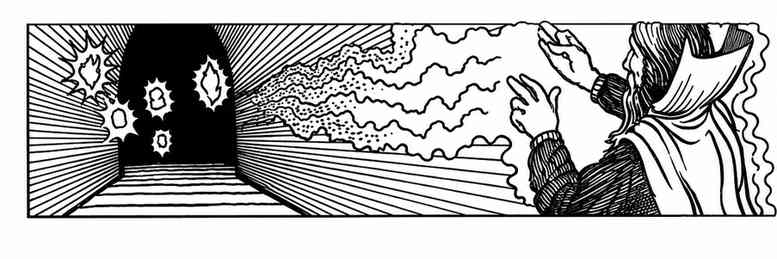
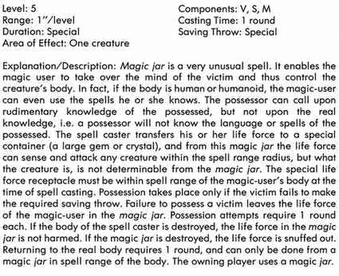
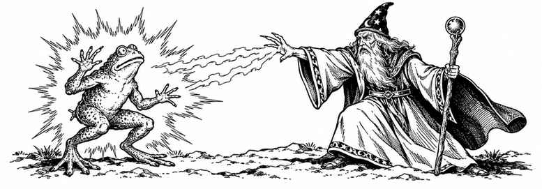
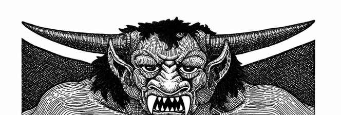

魔法师 · Magic-Users
魔法师使用的材料成分比牧师、德鲁伊等施法职业更多，有些材料难以取得或价格昂贵，但魔法师可选择其他法术。若法术施法时间较短且需要材料成分，默认魔法师已预先决定施法并把材料放在衣物口袋或褶层中；否则，寻找材料所耗时间应计入游戏时间。例如，思考选择法术若耗时6秒，就会占去一个施法段；翻找口袋寻找材料可能耗去5段（30秒）。地下城主可允许替代材料，但替代可能影响法术距离、持续时间、影响范围或效果。通常，逆转或多用途法术须在冒险前决定准备哪种形式。具体可咨询地下城主。




一环法术 · First-Level Spells
影响普通火焰 · Affect Normal Fires
魔法师可改变小型火焰（从火把、提灯到直径最多3尺的普通篝火）的大小与亮度：将其缩小、变暗至火柴般微弱，或增强亮度至等同光亮术。缩小火焰会使燃料消耗降至一半，增强火焰则使燃料消耗加倍。无论哪种情况，热量都不会改变。
燃烧之手 · Burning Hands
魔法师指尖喷出灼热火焰。施法时双手拇指须相触，手指张开，使火焰呈扇形喷出；火焰在魔法师前方约120°水平扇区内延伸3尺。扇形区域内的生物每有魔法师一个经验等级便受到1点伤害，且不能豁免。火焰接触到的布料、纸张、羊皮纸和薄木材等易燃物会燃烧。
魅惑人类 · Charm Person
除影响范围限于“人类”（此处包括布朗尼、矮人、精灵、豺狼人、侏儒、地精、半精灵、半身人、半兽人、熊地精、人类、狗头人、蜥蜴人、尼克西、兽人、皮克精、精灵和穴居人等）外，效果同二环德鲁伊法术“魅惑人类或哺乳动物”。有关魅惑效果的其他说明同样适用。
通晓语言 · Comprehend Languages
魔法师可阅读原本无法理解的书面信息，例如藏宝图；但无法读懂魔法文字，只能辨认出它是魔法文字。法术也可用于理解正在说话的生物。两种情况下，魔法师都必须触碰待读物品或目标生物。此法术不会使施法者能够书写或说出该语言。材料成分是一撮煤灰和几粒盐。逆转法术“混淆语言”会阻止理解，或抵消通晓语言术。
舞光术 · Dancing Lights
魔法师可创造1至4团光，任选其一：模仿火把或提灯并发出相应亮度；形成类似鬼火的发光球体；或形成一个微弱、模糊的人形轮廓，类似来自火元素位面的生物。光团可依魔法师意愿前后移动、直行或转过拐角，无需持续专注控制。超出距离或持续时间后，光团会熄灭。材料成分为少许磷、巫木或一只萤火虫。
侦测魔法 · Detect Magic
除持续时间、影响范围和不需要材料成分外，效果同一环牧师法术“侦测魔法”。
放大术 · Enlarge
此法术能令一个生物或物体瞬间增大，同时增加体积和重量。生物每级增大20%，最多增大至原来的三倍；物体增幅减半，即每级10%，最多增大一倍。目标必须在视线内。每级最多影响10立方英尺活体物质或5立方英尺非生命物质。魔法性质不会增强：巨型或+1长剑仍只有原本的魔法加值，法杖大小的魔杖仍只能发挥原有功能，巨型药水则只是需要饮用更多液体才会生效。重量、质量和力量会随之增加，例如挡门的桌子更难推开，投掷的石块更重更有杀伤力，链条更沉，门更厚。身高12尺的人会如食人魔，身高18尺的人则会如巨人。逆转法术“缩小术”可按相同比例抵消放大术或令生物、物体缩小。不情愿的目标可豁免；成功则法术无效且法术位仍被消耗。材料成分是一撮铁粉。
抹消术 · Erase
抹消术可以从卷轴、纸张、羊皮纸或类似表面上清除魔法或普通文字，但不能清除爆裂符文或徽记术。法术的基础成功率为50%；针对魔法文字，每个施法者经验等级额外增加2%，针对普通文字则额外增加4%。这相当于目标的豁免机会：掷百分骰，结果超过相应成功率时，法术失败。
羽落术 · Feather Fall
受影响的生物或物体会立即变得如羽绒般轻柔，下落速度减至每秒2尺，即每段12尺；法术持续期间着地不会受到伤害。法术结束时，下落速度立即恢复正常。魔法师可对自己、其他生物或物体施法，距离不超过每级1"。法术持续每级1段，影响体积为1立方英寸。受影响生物和／或物体的总重量不得超过2,000金币加每级2,000金币。例如，二级魔法师的施法距离为2"、持续2段，最多影响总重6,000金币（600磅）的目标。法术只影响自由落体或被抛射的物体；不能影响剑击或冲锋的生物，但可以影响投射物。材料成分是魔法师身上携带的一根小羽毛或一撮羽绒。
寻觅魔宠 · Find Familiar
魔宠对魔法师有诸多帮助：它会把自己的生命值加入魔法师的生命值总数，将感官能力传递给主人，还能与主人交谈，并担任守卫、侦察者或间谍。然而魔法师无法控制会应召而来的生物种类，甚至无法保证一定有生物响应。此咒法每年只能尝试一次。施法时，魔法师须在黄铜火盆中烧炭，炭火旺盛后加入价值100金币的熏香、香草（必须包括罗勒、香薄荷和猫薄荷）及脂肪。材料燃烧时开始念咒，直到魔宠出现或施法时间结束；地下城主暗中决定结果。魔法师完全无法控制出现的生物种类。
| d20骰值* | 魔宠 | 感官能力 |
|---|---|---|
| 1–4 | 黑猫 | 卓越的夜视与听觉 |
| 5–6 | 乌鸦 | 卓越的视觉 |
| 7–8 | 鹰 | 极佳的远距离视觉 |
| 9–10 | 尖叫猫头鹰 | 夜视等同人类日光下视力；听觉极佳 |
| 11–12 | 蟾蜍 | 广角视觉 |
| 13–14 | 鼬 | 听觉卓越、嗅觉极佳 |
| 15 | 特殊魔宠，见下表 | — |
| 16–20* | 施法距离内没有魔宠 | — |
*每有3个魔法师经验等级，骰值减1；若调整后为15或更低，则重掷d16。若重掷结果为16，按“没有魔宠”处理。调整后为15时，按阵营查找特殊魔宠：
| 魔法师阵营 | 特殊魔宠 |
|---|---|
| 混乱邪恶或混乱中立 | 夸塞魔 |
| 混乱善良、中立或中立善良 | 伪龙 |
| 守序中立或守序善良 | 布朗尼 |
| 守序邪恶或中立邪恶 | 小魔鬼 |
普通魔宠有2至4点生命值，护甲等级为7（体型、速度等带来防护）。每只都异常聪明，并对其魔法师主人绝对忠诚。魔宠距离主人12"内时，其生命值会加进魔法师的生命值总数；但若魔宠死亡，魔法师将永久损失相当于魔宠生命值两倍的生命值。特殊魔宠的能力见《怪物图鉴》，布朗尼除外：它会成为朋友和伙伴，使魔法师敏捷提高至18，并赋予其不会遭遇突袭的优势，以及所有豁免检定+2。特殊魔宠被召唤时可进行对抗魔法的豁免；若成功，则无视法术，而且该魔法师当年不会再有魔宠。魔宠通常只会在主人生死攸关时为其战斗；夸塞魔和小魔鬼在可能危及自身性命时，有90%概率不会参战。
友谊术 · Friends
友谊术会暂时提高魔法师2至8点魅力，或暂时降低1至4点，取决于影响范围内的生物是否通过对抗魔法的豁免检定。未通过者会对魔法师留下深刻印象，强烈希望成为其朋友并提供帮助；通过者则会对魔法师感到不自在，觉得他令人恼火。此法术完全不影响动物智力或更低的生物。材料成分为粉笔（或白面粉）、灯黑（或煤灰）和朱砂，施法前须涂在脸上。
封门术 · Hold Portal
法术以魔法封住木、金属或石制的门、闸门或活板门，使其如同牢固地闩住并锁好。施法距离为每级2"，持续每级1轮。任何异次元生物（恶魔、魔鬼、元素等）都能击碎被封住的门。施法者高出4级或更多的魔法师可随意打开封住的门；敲击术或解除魔法也会使封门术失效。被封的门仍可用蛮力撞开或砸坏。
鉴定术 · Identify
施法时，魔法师须触摸并以正常方式持用或穿戴待鉴定物品，例如将手镯戴在手腕、头盔戴在头上、靴子穿上、斗篷披好或匕首握在手中。使用该物品可能带来的任何后果都由魔法师承担，但仍可进行通常允许的豁免检定。法术每生效一段，便有15%加魔法师每级5%的概率获知物品的一项性质，也可能得知它毫无性质、只是骗局（例如侦测出诺斯图的魔法灵光或魔法口）。每次有机会获知性质时，地下城主暗中判定魔法师是否通过对抗魔法的豁免：成功则得知该性质；恰好少1点则获知错误力量；低于目标值更多则一无所获。物品不会透露确切命中加值或伤害加值，但可判断其加值大致多少。若有充能，物品不会透露确切数量，只会给出误差±25%的估值；例如，实际有40次充能的魔杖可能被估为30、50或其间任意数值。魔法师必须在发现物品后、每级1小时内完成检查，否则其可读灵光会与曾拥有过它的角色留下的灵光混杂。施法并完成鉴定后，魔法师失去8点体质；每休息6回合可恢复1点。若体质降至3以下，魔法师会昏迷；直到24小时后体质完全恢复才会苏醒。材料成分为一颗价值至少100金币的珍珠、一根浸过酒的猫头鹰羽毛（须饮下浸液），以及一条活的小鲤鱼（须整条吞下）。若将幸运石磨成粉加入浸液，成功概率提高25%，所有豁免检定获得+4。
跳跃术 · Jump
受术者可向前跳跃最多30尺，向后或向上跳跃最多10尺。每超过一级的3个魔法师经验等级，受术者额外获得一次跳跃；例如，四级魔法师可使目标跳两次，七级时可跳三次。所有跳跃须在施法后1回合内完成，之后法术失效。法术不保证安全着陆，也不保证能抓住落点。材料成分为一条蚱蜢后腿，每次跳跃须折断一条。
光亮术 · Light
除上述数据外，效果同一环牧师法术“光亮术”。
魔法飞弹 · Magic Missile
魔法师指尖射出一枚或多枚魔法飞弹，飞弹会准确命中目标。每枚飞弹造成2至5（1d4+1）点伤害。若魔法师能够发射多枚飞弹，可自行选择让它们命中一个或多个生物。魔法师每有2个经验等级便额外获得一枚飞弹：三级时2枚，五级时3枚，七级时4枚，依此类推。
修补术 · Mending
此法术可修复物体上的小型断裂。只要只有一处断裂，就能接合断裂的戒指、链环、吊坠或细匕首。陶器或木制品即使断成多块，也能无痕接合并恢复如新般的强度。皮袋或酒囊上的破洞也可完全修复。此法术不能修复任何魔法物品。材料成分是两块小磁铁（很可能是天然磁石）或两个带刺果实。
传讯术 · Message
魔法师可低声说出一段密语，同时秘密或公开地用手指指向目标；低语会沿直线传到目标耳中。信息必须能在法术持续时间内说完。若尚有时间，接收者可低声回复，魔法师也能听见。施法者与接收者之间必须有畅通无阻的路径。材料成分是一小段拉细的铜丝。
诺斯图的魔法灵光 · Nystul's Magic Aura
魔法师可令一个物体带有魔法灵光，使其被侦测魔法时显现灵光。若侦测者正持有该物体并尝试侦测其灵光，可进行对抗魔法的豁免；成功则识破灵光是用来误导他人的假象。否则，该灵光会被视为真实魔法，但无论进行多少检测，都无法查明其具体魔法性质。材料成分是一小片丝绸，施法时须用它拂过目标物体。
防护邪恶 · Protection from Evil
除上述数据外，效果同一环牧师法术“防护邪恶”；德鲁伊版本须使用铁粉和银粉作为材料，在地面描画魔法防护圈。此法术可逆转。
推力术 · Push
魔法师念出咒语后，会以无形力量击向其指向的物体。推力不大，但每级可产生1英尺磅的力量；可将小物体沿远离施法者的方向推移最多1尺，在适当条件下推倒物体，或使生物失去平衡。例如，若正在攻击的生物豁免失败，该轮便无法攻击。被推动生物的重量不能超过法术力量的50倍；例如，一级魔法师无法有效推动重量超过50磅的生物。若推力作用于生物持有的物体，而生物豁免失败，则按法术的英尺磅力量相应扣减其命中机会；若生物跌倒，则按适用规则提高对手的豁免。材料成分是掌中一小撮黄铜粉，施法前须吹向所指目标。
阅读魔法 · Read Magic
魔法师借此法术阅读物品上的魔法铭文，例如书籍、卷轴、武器等原本完全无法理解的文字。（魔法师自己的法术书，以及已通过魔法阅读过的作品，本就能够理解。）解读通常不会触发文字中蕴含的魔法，但诅咒卷轴可能例外。法术施展后，魔法师只要读过某段魔法铭文，以后便可直接阅读，无需再次施展阅读魔法。材料成分是透明水晶或矿物棱镜，不会因使用而消耗。逆转法术“不可读魔法”会使铭文对任何生物都完全不可读，即使使用阅读魔法也不行，除非法术结束或魔法被解除。逆转形式的材料成分是一撮泥土和一滴水。
护盾术 · Shield
魔法师前方会出现一道隐形屏障，能完全抵消魔法飞弹攻击。对手掷、投或手持发射的投射物（斧、飞镖、标枪、长矛等），护甲等级相当于2；对小型机械发射的投射物（箭、弩矢、子弹、曼提柯尔尖刺、投石索弹丸等），护甲等级相当于3；对其他形式的攻击，护甲等级相当于4。护盾还会使魔法师针对主要来自正面的攻击进行豁免时获得+1。只有来自魔法师正面的攻击会触发护盾保护。
电爪术 · Shocking Grasp
魔法师施法后会积蓄强大电荷，触碰生物时释放电击，造成1至8（1d8）点伤害，另加魔法师每级1点。魔法师只须靠近并触碰对手身体，或触碰一件与对手身体相连的导电物即可；对手触碰魔法师不会释放此法术。
睡眠术 · Sleep
睡眠术令一个或多个生物陷入昏睡，但不死生物及《怪物图鉴》明确列为免疫的生物不受影响。可影响数量取决于目标生命骰或生命值：
| 目标生命骰／生命值 | 可影响数量 |
|---|---|
| 不超过1 | 4–16（4d4） |
| 1+1至2 | 2–8（2d4） |
| 2+1至3 | 1–4（1d4） |
| 3+1至4 | 1–2（1/2d4，向上取整） |
| 4+1至4+4 | 0–1（掷d4，结果3或4时影响1个） |
受术目标须处于一个直径3"的圆形区域内，区域中心由施法者指定。拍打或造成伤害会唤醒目标，噪音不会；唤醒需完整1个近战轮。每名行凶者每个近战轮可自动杀死一名沉睡目标。材料成分是一撮细沙、玫瑰花瓣或一只活蟋蟀。
蜘蛛攀行 · Spider Climb
受术者可如巨型蜘蛛般沿垂直表面攀爬移动，速度为3"，也能倒挂在天花板上。受术者须赤手赤脚才能攀爬。法术期间，重量不足50金币的物品会黏在受术者的手脚上，因此魔法师受术后几乎无法施法。材料成分是一滴沥青和一只活蜘蛛，均须由受术者吞下。
泰瑟浮空圆盘 · Tenser's Floating Disc
魔法师制造一个圆形凹面、无重力的浮空圆盘，以创造此术的泰瑟巫师命名；这位巫师以寻宝闻名，也以捡回每一枚铜币的贪心著称。圆盘直径3尺，每级可承载1,000金币重量；始终水平地浮在地面上方约3尺。若无特别命令，圆盘与魔法师保持6尺间隔；魔法师也可命令它在法术范围内移动，速度为6"。若魔法师离开施法距离，或法术持续时间结束，圆盘便会消失，其承载物随即落到下方地面。材料成分是一滴水银。
无形仆役 · Unseen Servant
无形仆役是看不见的侍从，会遵从魔法师命令走动、取物、开门、扶椅、打扫和修补。它由力量构成，力量不大，但会服从命令；悬空时最多携带200金币重量，若在光滑石面或木地板等摩擦力较小的表面移动，最多可搬运其两倍重量。它只能开启普通的门、抽屉和盒盖等。无形仆役不能战斗，也不会像生物那样被杀；它可以被魔法解除，或在受到6点魔法伤害后消散。材料成分是一段细绳和一小块木头。
口技术 · Ventriloquism
魔法师可使自己的声音（或其他人声、类似声音）仿佛从别处发出，例如另一生物、雕像或走廊另一端。魔法师可令声音听起来像是由不同生物发出，但必须使用自己懂得的语言，或发出自己平时能发出的声音。听者每有一点超过12的智力，便有10%概率识破骗局。材料成分是一只小纸锥。
书写术 · Write
此法术使魔法师能够把暂时无法理解的法术抄入法术书，例如因法术环级过高或智力不足而无法理解的法术。尝试书写时，魔法师须进行对抗魔法的豁免检定：目标法术只比自己目前能施展的最高环级高一环时，检定获得+2；高两环时不调整；高三环或更多时，每高一环便承受−1调整。检定失败时，魔法师每有目标法术一环便受到1d4点伤害，并昏迷相同数量的回合；若未死亡，这种伤害每天只能恢复1d4点，因为它同时损害精神与肉体。书写每环法术需1小时，期间魔法师处于恍惚状态，敌人总能令其措手不及。除书写材料外，还需要由稀有物质调制的精制墨水，每瓶至少价值200金币；若无法购得，魔法师须自行调制。
二环法术 · Second-Level Spells
可闻幻象 · Audible Glamer
施法后，魔法师可在法术距离内任意位置制造声音，并令声音仿佛正在远离、接近或停留在原处。音量取决于施法者等级：以最低可施展此法术的3级魔法师为基准，声音最大相当于4个人；每升一级，音量再增加相当于4个人的响度。因此，4级魔法师最多能制造相当于8个人的声音，可表现为说话、歌唱、呼喊、行走、行军或奔跑。声音内容几乎不受限制，但音量不得超过施法者等级所允许的程度。例如，一群老鼠奔跑吱叫的音量约等于8个人奔跑呼喊；狮吼约等于16个人，龙吼则至少相当于24个人。听者若声明自己不相信这声音，可进行豁免检定；成功则什么也听不见，或只听见微弱声响。此术与幻影力量术配合尤其有效。材料成分是一小团羊毛或一小块蜡。
恒久光亮术 · Continual Light
除上述距离较短且施法者不能逆转此术外，其余效果与牧师三环恒久光亮术相同。
半径15尺黑暗术 · Darkness, 15' Radius
此法术制造完全无法穿透的黑暗，普通光源和魔法光亮均无法照明其中；只有光亮术或恒久光亮术能与之抗衡。若施展光亮术，黑暗术会被抵消；反之亦然。材料成分是一撮蝙蝠毛，以及一滴沥青或一块煤。
侦测邪恶 · Detect Evil
除上述数据外，此术与牧师一环侦测邪恶术相同。此法术可以逆转，用以侦测善良。
侦测隐形 · Detect Invisibility
施法后，魔法师可清楚看见隐形物体，以及星界、以太界、隐藏、隐形或相位错开的生物。侦测范围沿施法者视线延伸，形成一条宽1"、长度不超过法术距离的路径。材料成分是一撮滑石粉和少许银粉。
心灵感应 · ESP
施法者可探知距离内生物的表层思想，但无法感知没有心智的生物，例如不死生物。至少2尺厚的岩石、至少2英寸厚的非铅金属，或一张薄铅箔，都能阻隔此术。魔法师每回合可探测一个生物的表层思想；低等生物只能显露简单的本能念头。探测可连续数轮针对同一生物。此术可帮助判断门后是否有生物，但不一定能辨明其种类。材料成分是一枚铜币。
愚人金术 · Fool's Gold
此术可在持续时间内将铜币暂时变为金币，或将黄铜器物变成纯金。法术可影响大量铜或黄铜；计算时按每立方尺相当于4,000金币处理。看到假金的生物可进行豁免检定；若掷骰结果不高于其智力值，即能识破，但每有施法者一个等级，检定掷骰便须加1，因此高等级魔法师制造的假金更难识破。若以冷锻铁猛击假金，有一定概率令其恢复原状，概率取决于所用材料：撒上研磨后的50金币黄水晶，概率为30%；100金币琥珀为25%；500金币黄玉为10%；1,000金币东方黄玉（刚玉）仅为1%。
遗忘术 · Forget
此术使影响范围内的生物忘记上一轮（即过去1分钟）发生的事。施法者每有3个经验等级，遗忘时间再增加1分钟。遗忘术不会解除魅惑、暗示、任务术等法术，但受术者可能会忘记是谁对自己施法。施法者可指定1至4个生物：若仅影响1个目标，其对抗魔法的豁免检定承受−2；影响2个时承受−1；影响3或4个时不调整。专门为此施展的牧师治疗术或复原术，以及祈愿术，可恢复失去的记忆；其他方法无效。
隐形术 · Invisibility
受术者从正常视觉和红外视觉中消失，但仍会发出平常的声音。法术持续至被魔法破除、解除，或由施法者或受术者主动取消；受术者攻击任何生物时，隐形效果也会立刻结束，不过第一次攻击仍可利用隐形优势。受术者的同伴也看不见其本人及装备，除非同伴本来就能看见隐形事物，或借助魔法做到。拥有至少10个生命骰、经验等级或相当智力的高等智能生物，有机会自动察觉隐形物体。材料成分是一根睫毛和少许阿拉伯树胶，须将睫毛封入树胶中。
敲击术 · Knock
敲击术可打开卡住、被把持或受巫师锁影响的门，也能打开上闩或以其他方式锁住的门、暗门、上锁或机关箱盒，以及镣铐和锁链。对巫师锁施法只会令其失效1回合，并不解除法术；其他情况下，锁具或焊接处会永久打开，但之后仍可重新关闭上锁。此术不能抬起横闩或类似障碍物（例如吊闸）。法术每次可完成两项开锁操作；若一扇门同时上锁、上闩且被把持，则需要施展两次敲击术。
雷欧蒙陷阱 · Leomund's Trap
此术制造一个虚假的陷阱，用来欺骗试图偷取施法者财物的矮人或盗贼。魔法师可将幻象附着在锁、铰链、搭扣、螺旋盖或棘轮等小型装置上。能够侦测陷阱的角色检查时，有80%概率会把它当成真的；检查者每高于1级，概率降低4%。若有人试图拆除，拆除者只有20%概率会相信自己成功；其每高于1级，概率增加4%。这纯属幻象，忽略它不会发生任何事；主要用途是吓退盗贼或浪费其宝贵时间。材料成分是一块接触目标物件的黄铁矿。每个50尺见方区域内只能放置一个雷欧蒙陷阱。
浮空术 · Levitate
魔法师可对自己或其他生物施展浮空术，目标重量上限为每经验等级相当于1,000金币；例如，3级魔法师最多可使相当于3,000金币（300磅）的目标浮空。若施法对象是自己，可每轮垂直移动20尺；若对象是其他生物，魔法师只能令其以每轮最多1尺的速度垂直移动。此术不提供水平移动能力，但受术者可沿峭壁表面推行以横向移动。施法者可随时取消法术。若目标不愿受术，可进行豁免检定。材料成分是一只小皮环，或一段弯成杯状且带长柄的金丝。
寻物术 · Locate Object
此术与牧师三环寻物术相同，只有距离不同。此法术可以逆转，用以隐藏或干扰对特定物件的侦测。
魔法之口 · Magic Mouth
施法者可为指定物件注入魔法，使一张突然出现的嘴在特定事件发生时说出预先交代的信息。魔法之口能以施法者懂得的语言，在1回合内说完不超过25个词的信息，但不能念诵法术。嘴会随话语动作；若法术施于雕像，雕像的嘴便会动起来发声。目标可以是树、岩石、门或其他物件，但不能是有智慧的动物或植物。施法者可设定触发条件，既可简单如“第一个触碰你的人”，也可详尽具体；触发距离为每等级1/2"，例如6级魔法师可令其在3"内有长翅膀的生物出现时开口。在触发条件满足前，法术持续有效，因此持续时间不定。魔法之口无法辨识隐形生物、阵营、等级、生命骰或职业（外表衣着除外）。材料成分是一小块蜂巢。
镜影术 · Mirror Image
施法者周围会出现1至4个与本人完全相同的幻象。这些影像会做出与魔法师相同的动作；法术造成轻微模糊与扭曲，使对手无法确定哪一个是真身。影像被武器（无论是否具有魔法）击中便会消失，其余影像不受影响。影像似乎每轮都在变换位置，因此即使真身某轮被击中，下一轮也无法据此从影像中辨认真身。确定影像数量时掷百分骰，并按魔法师经验等级加值：结果不高于25，出现1个；26至50，出现2个；51至75，出现3个；高于75，出现4个。法术结束时所有影像消失。
烟火术 · Pyrotechnics
除上述数据外，此术与德鲁伊三环烟火术相同：施法者可使火源迸发炫目的烟火，或产生浓密烟雾；两种效果的影响范围分别为火源的10倍或100倍。
虚弱射线 · Ray of Enfeeblement
此射线会削弱对手的力量，并使依赖力量的攻击能力降低至少25%。施法者每超过3级一等级，力量额外降低2%；例如，4级魔法师施法会使力量降低27%。射线距离和持续时间也取决于施法者等级。受影响生物的物理攻击伤害按相同比例降低，包括投射物、刺击、劈砍或钝击武器，以及撕咬、抓挠、冲撞、踢击和缠绕等攻击。其他能力应如何降低，由地下城主裁定。目标豁免成功则不受影响。
绳索戏法 · Rope Trick
此术施于一段5至30尺长的绳子后，绳子一端升起，直到整条绳子垂直悬空，仿佛固定在上方；其顶端实际连入异次元空间。施法者及最多五人可沿绳爬入这个安全之所，任何生物都无法找到他们。若已有六人进入，绳子便不能被拉入异次元空间；否则可将绳子收起。若未收起，绳子会一直悬空，直至有生物将它移走。进入异次元空间的人必须在法术结束前沿绳爬下，否则法术失效时会从最初攀爬的高度坠落。每次只能有一人攀爬。若没有爬到绳顶的异次元入口，攀爬者仍可经由绳索戏法返回普通空间。材料成分是研磨的玉米萃取物和一圈扭曲的羊皮纸。
惊吓术 · Scare
此术以少于6个经验等级或生命骰的生物为目标；目标若未能通过对抗魔法的豁免检定，便会因恐惧而颤抖。受惊者不会丢下手持物品，除非负重过度。若被逼入绝境，受术者仍会战斗，但命中、伤害及所有豁免检定均承受−1。此术对精灵、半精灵、不死生物（骷髅、僵尸、食尸鬼、影怪、鬼魂、尸妖、怨灵）、幼虫、勒穆尔、玛涅斯，以及任何种类的牧师均无效。材料成分是骷髅、僵尸、食尸鬼、鬼魂或木乃伊的骨片。
粉碎术 · Shatter
此术能粉碎非魔法制造的水晶、玻璃、陶土或瓷器物品，例如小瓶、瓶子、长颈瓶、罐子、窗户和镜子等，使其碎成数十片。每级施法者可影响重量不超过100金币等值的物件；符合材质与重量条件的其他物件须通过对抗“钝击”的豁免检定，否则被粉碎。材料成分是一片云母。
恶臭云 · Stinking Cloud
魔法师制造一团翻涌的恶心蒸气，最远可出现在3"之外。云团内的生物须通过对抗毒素的豁免检定，否则因恶心而无法行动2至5轮（掷1d4＋1）。豁免成功者仅在云团中，以及离开后的下一轮内，因视觉和嗅觉器官受到刺激而无法行动。材料成分是一枚臭鸡蛋或几片臭甘蓝叶。
力量术 · Strength
此术可提高受术角色的力量值，持续时间内有效；提升幅度取决于职业，并受种族、性别和职业对力量值的限制。牧师掷1d6增加1至6点；战士（包括圣武士和巡林客）掷1d8增加1至8点；魔法师和武僧掷1d4增加1至4点；盗贼掷1d6增加1至6点。若战士、圣武士或巡林客原有力量18，额外获得一次10%至80%的超凡力量掷骰。所有超过18的力量值也按超凡力量处理，每增加1点，相当于超凡力量评级增加10%。材料成分是几根毛发，或一撮来自特别强壮动物（猿、熊、牛等）的粪便。
蛛网术 · Web
蛛网术制造多层强韧黏丝，类似蜘蛛网但大得多、坚韧得多。蛛网须锚定在两个或更多相对的支点之间，例如地板与天花板或两面相对的墙；最多覆盖8立方英寸，厚度至少1英寸，例如可形成高4"、宽2"、厚1"的网团。被困在网中或碰到蛛丝的生物会被黏住。力量低于13的生物必须留在原处，直到有人救出或法术结束；力量13至17者每回合可挣脱1尺蛛丝，力量18或以上者每轮可挣脱1尺。每被困满一回合，生物便累计增加5%的窒息死亡概率。此网易燃，魔法火焰剑可轻易割开；火把、燃烧油或火焰剑等火源会点燃蛛网，使其一轮内烧尽。网中生物受到2至8点火焰伤害，但已挣脱者不受伤。对抗蛛网术的豁免检定承受−2；成功时，若有空间逃离，目标视为已跳出蛛网；若无处可逃，蛛网只以一半强度束缚。材料成分是一小团蜘蛛网。
巫师锁 · Wizard Lock
对门、箱子或门扉施展此术后，它们会被魔法锁住。只能通过破坏物件、施展解除魔法或敲击术，或由等级至少高于施法者4级的魔法师开启。敲击术和高等级魔法师只能暂时令巫师锁失效，并不会解除它。异次元生物不会像影响守门术那样影响巫师锁。
三环法术 · Third-Level Spells
闪现术 · Blink
施法者的肉身会以随机的时机和方向，短暂地从当前位面消失，再闪现回来。法术生效期间，每轮闪现的时段以2d4随机决定；施法者会在该时段重新出现于原位置外2"处。方向掷1d8决定：1正前方、2右方、3右后方、4后方、5左后方、6左方、7左前方、8正前方。若目标空间已被占据，施法者会从原位置向外偏移至空处，最多额外移动10尺；若仍无法找到空处，便会被困在以太界。闪现时段前后，只有能够同时攻击两个位置的攻击（如吐息、火球等大范围攻击）才能击中施法者；其他攻击者只有在闪现前已发动攻击才可能命中。法术期间，施法者只有75%概率能完成徒手攻击以外的行动；施法、使用装置或物品可能失败、出错或指向错误，由地下城主按具体行动裁定。
隔墙闻声 · Clairaudience
魔法师可专注于某处，听见指定地点中心半径6"范围内的声音。距离不构成限制，但该地点必须为施法者熟悉或一目了然之处，例如门后、拐角另一侧或树林中。此术只能听见魔法师平常能够察觉的声音；金属板或魔法防护可阻断法术。此术只在施法者所在位面生效。材料成分是一只价值至少100金币的小银号角；施法时号角会消失。
隔墙观望 · Clairvoyance
与隔墙闻声相似，此术使魔法师能在心中看见所选地点视线范围内的景象。距离不构成限制，但该地点必须熟悉或一目了然。光线仍会影响观察；即使施法者能看见红外或紫外光谱，若目标区域漆黑，观望范围也仅限于地点中心半径1"。否则，视野可延伸至正常视觉范围。金属板或魔法防护可阻断此术；法术只在施法者所在位面生效。材料成分是少许人类或类人生物的松果体粉末。
解除魔法 · Dispel Magic
除上述数据外，此术与牧师三环解除魔法相同。
火球术 · Fireball
火球术会爆发一团烈焰，伴随低沉轰鸣；伤害为施法者每个经验等级1d6。火球术法杖造成6d6伤害，具备此能力的法杖造成8d6，卷轴上的此类法术造成5至10d6（1d6＋4）。爆炸不会产生很大气压，通常会沿发生地点的空间形状扩散，覆盖大致等于球体体积的区域，约33,000立方尺。火球会点燃爆炸范围内所有可燃物，并熔化金、铜、银等软金属；暴露于法术效果下的物品须另行检定是否受损。成功通过豁免检定的生物，其装备视为未受影响。施法者以手指指定火球爆炸的距离和高度；一道火光从指尖射出，若未在抵达指定距离前撞上实体，便会炸开。豁免失败者承受全额伤害；成功者及时闪避、卧倒或滚开，只受一半伤害。材料成分是一颗由蝙蝠粪和硫磺制成的小球。
爆炸符文 · Explosive Runes
魔法师可在书籍、地图、卷轴或其他承载文字信息的材料上描绘神秘符文，以阻止未经授权者阅读。读者每有一个魔法师经验等级，发现符文的概率便为5%；盗贼无论等级如何，发现概率都只有5%。符文被读时会爆炸，对读者造成12至30点伤害（6d4＋6）；爆炸半径内的其他生物可进行豁免检定，成功则伤害减半。施法者及其指定的其他魔法师可阅读材料而不触发符文；施法者也可随时将其完全移除。除此之外，只能以解除魔法移除；若未触发，符文会随之消失。爆炸会摧毁承载符文的材料，除非该材料通常不会被魔法火焰摧毁。
假死术 · Feign Death
施法者可使自己或经验等级／生命骰不高于自身的其他生物进入僵直状态，外观与真实死亡无法区分。受术者仍能闻、听并知晓周围发生的事，但完全没有触觉或视觉，因此身体受伤或遭受虐待时不会感到疼痛，也不会作出反应；所受伤害减半。法术期间，麻痹、毒素或能量等级吸取均无效；但已经注入或以其他方式进入身体的毒素，会在法术结束后生效，受术者可进行豁免检定。只有自愿者才能成为目标。施法者可随时结束法术，但身体机能需整整一轮才能恢复。
火焰箭 · Flame Arrow
法术施展后，在其持续期间，魔法师每段可接触一支箭或弩矢，使之成为魔法弹药，但不获得命中加值。每支弹药必须在1轮内射出，否则会被火焰完全吞噬，魔法随之消失。火焰弹药按正常概率引燃目标；若目标还会受到额外火焰伤害，每支命中的火焰箭会额外造成1点伤害。材料成分是一滴油和一小片燧石。
飞行术 · Fly
受术生物获得魔法飞行能力，可水平或垂直以每移动速度12"飞行；上升时速度减半，俯冲下降时速度加倍。额外的1至6回合持续时间由地下城主秘密掷定，因此施法者并不知道法术何时结束。材料成分是任意鸟类的一根飞羽。
疾风术 · Gust of Wind
施法者面向的方向会吹出一阵强风，足以吹灭蜡烛、火把等未受保护的火焰；受保护的火焰（如灯笼中的火）会剧烈摇曳，并有每施法者等级5%的概率被吹灭。强风会使大火向外偏移1至6尺；将小型飞行生物吹退1至6"，令试图迎风移动的人形生物无法前进，并使大型飞行生物速度降低50%，持续1轮；轻质物体也会被吹翻。材料成分是一粒豆科植物种子。
加速术 · Haste
受术生物的移动速度和攻击次数均加倍。例如，移动速度为6"、每轮攻击一次的生物，移动速度变为12"，每轮攻击两次；施法速度不会加快。受术生物数量最多等于魔法师的经验等级；区域内距离施法者最近者优先，且所有目标都必须位于指定区域内。此术会抵消缓慢术，并因新陈代谢加速而使受术者衰老。材料成分是一片甘草根刨屑。
人类定身术 · Hold Person
此术与牧师二环人类定身术相似，可使距离内由魔法师指定的生物无法行动。若影响3或4人，豁免检定正常；影响2人时，目标豁免承受−1；只影响1人时，目标豁免承受−3。若因部分抵消等原因，定身效果只被部分削弱，则法术改为发挥缓慢术的效果，除非目标豁免成功。目标包括布朗尼、树精、矮人、精灵、豺狼人、侏儒、地精、半精灵、半身人、半兽人、熊地精、人类、狗头人、蜥蜴人、水妖、兽人、小妖精、精灵妖和穴居蜥人等原书所列类人生物。
红外视觉 · Infravision
受术者可看见红外光谱，从而在6"范围内辨别热辐射差异。强烈的红外源（火焰、提灯、火把等）会像强光影响普通视觉那样使红外视觉眩目或产生“阴影”，因此受术者无法在这些热源附近有效使用红外视觉。隐形生物通常不会被红外视觉发现，因为隐形术会同时影响红外、紫外和普通光谱。材料成分是一撮干胡萝卜，或一块玛瑙。
半径10尺隐形术 · Invisibility, 10' Radius
此术基本同隐形术，但会使目标周围半径10尺内的生物一并隐形；受术者彼此也无法看见对方。某个受术者攻击时，只会对该受术者本人解除隐形，不会令其他受术者显形，除非该受术者主动结束法术。
雷欧蒙微型小屋 · Leomund's Tiny Hut
施法者周围会出现不透明的力场球体，半球露出地面，另半球穿入地面或地板。球内温度在外界气温0°F至105°F之间时维持70°F；超出该范围后，内部温度也会相应变化。小屋能抵御最高50英里/小时的风，风力更强便会摧毁它。内部呈半球形，施法者可随意令其发出微光或熄灭。力场从外部看不透明，从内部看则透明；它不能防护投射物、武器、法术等攻击。除施法者外，最多可容纳6名人形大小的生物；他们可自由出入，不会损坏小屋，但施法者离开时法术立即消散。材料成分是一颗小水晶珠，法术结束或小屋被解除时会破碎。
闪电束 · Lightning Bolt
施法者释放一道强力电能，对影响范围内生物造成每个经验等级1d6点伤害；通过豁免检定者只受一半伤害。法术距离是闪电开始出现的位置；若闪电在6"处开始，其射程便从该处继续向前延伸。闪电会点燃可燃物、劈开木门、击碎厚达1尺的石材，并熔化铅、金、铜、银、青铜等熔点较低的金属。承受闪电全力冲击的物件也须进行受损检定，规则同火球术。施法者决定闪电的形状和长度：可选择宽1/2"、长4"的分叉闪电，或宽1/2"、长8"的单束闪电。若12级魔法师将闪电施至最大距离16"，分叉闪电会从16"处开始向外延伸至20"，单束则延伸至24"。若非导电障碍物（如石墙）挡住闪电，使其无法达到全长，闪电会折返施法者方向，总长度仍按起点至终点计算，障碍物所受伤害另计。例如，一道长8"的闪电从4"处开始，但前方只有3.5"空间，闪电便在3.5"处折返，沿原路方向反弹8"。材料成分是一撮毛皮，以及一根琥珀、水晶或玻璃棒。
召唤怪物 · I Monster Summoning I
施法后1至4轮内，魔法师会召来2至8只一级怪物。怪物种类由地下城主随机选择；怪物强弱可由地下城主掷骰决定，也可由其按掷骰结果自行选择。怪物会出现在施法者指定、且位于法术距离内的位置，并尽力攻击施法者的敌人，直到施法者命令停止、法术结束或怪物被杀。若没有敌人可攻击，且能够沟通、身体条件也允许，召来的怪物可以替魔法师完成其他差事。材料成分是一只小袋和一根小蜡烛（不必点燃）。
幻影力量 · Phantasmal Force
魔法师制造视觉幻象，所有相信幻象并看见它的生物都会受到影响，甚至可能被幻影投射物击伤，或跌入幻象中的尖刺坑洞。此术不包含声音幻象。幻象持续至被对手击中（除非施法者令其作出相应反应），或魔法师停止专注为止；例如施法者主动令幻象作出反应、移动，或遭到成功攻击，都可能中断专注。不相信幻象的生物可进行豁免检定；成功便会看穿幻象，并在能将真相有效告知同伴时，使同伴的豁免检定获得+4。未观察到幻象的生物不受影响，直到亲眼看见为止。幻象可表现为影响范围内任何物体、生物或力量。材料成分是一小团羊毛脂。
防护邪恶（半径10尺） · Protection from Evil, 10' Radius
此术与一环防护邪恶术相同，但影响范围扩大至受术者周围半径10尺。此术可以逆转；一般说明见牧师一环防护邪恶术。
防护普通飞弹 · Protection from Normal Missiles
此术使受术者完全不受投掷或发射的飞弹伤害，例如箭、斧、弩矢等；大型或魔法飞弹造成的每颗伤害骰伤害减少1点，例如弩炮或投石机弹丸、魔法箭矢、弩矢和标枪。此术不防护火球、闪电束或魔法飞弹等魔法攻击。材料成分是一片龟壳或鳖壳。
缓慢术 · Slow
受术生物的移动和攻击速度降至正常或当前速度的一半，因此可抵消加速术；若目标已被减速，效果还会累积。此术同样影响被魔法加速或减速的生物。受影响生物的数量最多等于施法者等级，且须位于魔法师指定的区域内；区域以施法者指定方向和距离为中心。材料成分是一滴糖浆。
暗示术 · Suggestion
魔法师以几个词、一句短语或一两句话，暗示目标采取施法者希望的行动。目标必须听得懂魔法师所说的语言。暗示必须听起来合理；要求目标自刺、扑向长矛、自焚或做其他明显有害的事，会自动使法术失效。但若说一池酸液其实是清水，跳进去会令人神清气爽，便可能奏效；又如暗示红龙停止攻击施法者一方，因为合作后可去别处掠夺丰厚财宝，也属合理暗示。暗示行动可持续相当长时间。目标豁免成功则不受影响。特别合理的暗示可由地下城主裁定，使目标豁免承受−1、−2等惩罚。不死生物不受暗示术影响。材料成分是一条蛇舌，以及一小块蜂巢或一滴甜油。
通晓语言 · Tongues
除上述数据外，此术与牧师四环通晓语言术相同。材料成分是一尊小型黏土金字塔模型，施法时会碎裂。此术可以逆转。
水下呼吸 · Water Breathing
除上述数据外，此术与德鲁伊三环水下呼吸术相同；材料成分为一小段芦苇或麦秆。此术可以逆转。
四环法术 · Fourth-Level Spells
魅惑怪物 · Charm Monster
此术类似魅惑人类，但可影响任何活物；较低等级的生物可受术多只。受术生物会把施法者视为友善的盟友或伙伴，愿意善待或保护他；若能沟通，便会尽力遵从合理请求、指示或命令。魅惑最终会解除，解除概率取决于生物等级（即生命骰数）：1级或不超过2个生命骰，5%；2级或不超过3＋2个生命骰，10%；3级或不超过4＋4个生命骰，15%；4级或不超过6个生命骰，25%；5级或不超过7＋2个生命骰，35%；6级或不超过8＋4个生命骰，45%；7级或不超过10个生命骰，60%；8级或不超过12个生命骰，75%；9级或超过12个生命骰，90%。施法者明显的敌对行为会自动解除法术，或至少令目标获得一次新的豁免检定。法术可影响2至8只一级生物、1至4只二级生物、1或2只三级生物，或1只四级及以上生物。
困惑术 · Confusion
除上述数据外，此术与德鲁伊七环困惑术相同，但基础影响数量为2至16个生物。材料成分是一套三枚坚果壳。
挖掘术 · Dig
挖掘术使施法者每轮挖出125立方尺的土、沙或泥；挖出的材料均匀散落在坑洞周围。每次挖出的洞都是边长5尺的立方体。若继续向下挖过5尺，坑壁有坍塌概率：土层每额外挖深5尺，概率为15%；沙地35%；泥地55%。位于坑边1尺内的生物可用敏捷值进行豁免检定以免跌落，掷骰结果等于或低于敏捷值即成功。快速冲向坑洞区域的生物若未通过对抗魔法的豁免检定便会跌入；刚好处在新挖坑洞中心的生物必定跌落。施法者使用小型铲子和小桶施法，并须在每次挖掘过程中持续握住这些材料成分。
任意门 · Dimension Door
施法者立即传送至每等级3"以内的地点。此种特殊传送不会出现偏差，魔法师必定抵达指定位置；可在法术距离内想象目的地，也可说明方向与距离，例如“垂直向下30英寸”或“向西北上方45度、42英寸”。若目的地被实体占据，施法者会留在星界，直到有生物愿意对其施展解除魔法；期间施法者陷入昏迷，无法成功施法。若目的地脚下没有支撑物，施法者会坠落并受伤，除非另有魔法手段。施法者所穿戴或携带的物品也会随行，非生命物质总重量上限为5,000金币等值；若携带生命物质，上限减半。施展任意门后需等待7段才能恢复。
魔化武器 · Enchanted Weapon
此术将普通武器变成魔法武器，等同于＋1武器，但不提供任何命中或伤害加值。箭、斧、弩矢、弓、匕首、锤、钉头锤、矛、剑等均可受术；每次可影响两件小型武器（如箭、弩矢、匕首）或一件大型武器（如斧、弓、锤、钉头锤）。受术的飞弹武器成功命中后，法术即告解除；否则持续至时限结束，例如8级魔法师可维持40轮（4回合）。材料成分是研磨的石灰和碳。此术可以逆转。
延时术 · I Extension I
此术可将先前施展的一至三环法术的持续时间延长50%。例如，浮空术的持续时间可增至每等级1.5回合，人类定身术可延长至每等级3轮。只有持续时间具有意义的法术才会受益。
恐惧术 · Fear
施法者射出一道隐形射线，影响范围内的生物会转身惊慌逃跑。受影响者可能会丢下手中物品：一级生物（或1个生命骰）基础概率为60%，此后每增加一级（或一个生命骰），概率降低5%；例如，10级时为15%，13级时为0%。受术者以最快速度逃跑，持续轮数等于施法者经验等级。恐慌从施法后的下一轮开始，但物品会立即掉落。通过豁免检定者不受影响。材料成分是一颗母鸡的心脏或一根白色羽毛。
火焰魅惑术 · Fire Charm
施法者使火盆、火炬或篝火等普通火源成为魔法媒介，令一道轻薄的多色火焰帷幕环绕火源，在距火焰5尺处起舞。任何注视火焰或帷幕的生物若豁免失败，便会被魅惑，呆立凝视火焰；受术期间还会受到不超过12个词的暗示术影响，相关豁免承受−3。对受术者发动任何物理攻击，或以实体遮挡其视线，都会打破魅惑；法术到期也会解除。帷幕本身不是魔法火焰，穿过它受到的伤害与穿过原火源相同。材料成分是一小片极薄的多色丝绸，施法者须将其投入火源。
失手术 · Fumble
受术者会突然变得笨拙：奔跑时绊倒，伸手取物时失手掉落，使用武器时也可能笨拙地将其丢下。摔倒或捡回失手物品通常需要耗费下一整个近战轮；易碎物品掉落时还可能损坏。豁免成功者不会完全免疫，而是只以一半正常效率行动，效果类似缓慢术。材料成分是一小团凝固的乳脂。
幻象地形 · Hallucinatory Terrain
此术以幻象遮蔽影响范围内的真实地形。例如，可将平原或道路伪装成沼泽、山丘、裂谷或其他难以通过的地形；将池塘伪装成草地，将悬崖伪装成缓坡，或将遍布岩石的沟壑伪装成平坦宽阔的道路。幻象地形持续至该区域受到解除魔法影响，或被智慧生物接触为止。施法者每提升一级，可影响更大的区域；10级魔法师最多影响10" × 10"正方形区域，12级则为12" × 12"。材料成分是一块石头、一根树枝，以及少许绿色植物（叶片或草叶）。
冰暴术 · Ice Storm
施法者可选择以下一种效果：令大冰雹砸向直径4"的区域，使其中生物受到3至30点伤害（3d10）；或在直径8"的区域降下暴雪，使其中生物在法术持续期间失明，并令地面结冰、移动速度减半，移动中的生物还有50%概率滑倒。材料成分是一撮灰尘和几滴水。此术会抵消炽热金属术，但初次施法仍会造成伤害。
火焰陷阱 · Fire Trap
此术可设置在任何能够闭合的物件上，例如书、盒子、瓶子、箱柜、棺材、门或抽屉。受术物件通常不能再同时施加守门术或巫师锁：火焰陷阱与守门术同时施展时两者均失效；先施展者生效，后施展者失效。若在巫师锁之后施展火焰陷阱，火焰陷阱失效；若两者同时施展则均失效；若先设火焰陷阱再施展巫师锁，则有50%概率两术均失效。敲击术无法影响火焰陷阱；入侵者触碰或进入触发条件时，陷阱便会爆炸。施法者可正常使用受陷阱保护的物件。陷阱触发时发生半径5尺的爆炸，范围内生物须对抗魔法进行豁免检定，失败受到1d4＋施法者等级点伤害，成功则伤害减半。爆炸不会损坏被设陷阱的物件。火焰陷阱的侦测概率只有通常的一半；若尝试拆除却失败，陷阱会立即触发。施法时，施法者须以少许硫磺或硝石描出闭合处的轮廓。
小型无敌法球 · Minor Globe of Invulnerability
此术在施法者周围形成魔法球体，可阻挡一至三环法术进入；这些法术的影响范围不包括球体内部。施法者仍可从球体内向外施法，法术穿过球体时不会受到影响。四环及更高环级的法术不受此球体影响。解除魔法可破除此术。材料成分是一颗玻璃珠或水晶珠。
召唤怪物 · II Monster Summoning II
此术类似三环召唤怪物 I，但会召来二级怪物；怪物会在施法后1至4轮出现。材料成分与低环召唤怪物术相同。
植物生长 · Plant Growth
除上述数据外，此术与德鲁伊三环植物生长术相同。
群体变树术 · Massmorph
此术可将自愿受术、体型不大于人类的生物伪装成普通树木，每个经验等级最多影响10个生物。如此，一队人可伪装成一片树林、林丛或果园。其他生物即使穿过或触摸这些“树木”，也不会看穿幻象；但若击打树形生物，受伤和流血便会暴露其真实身份。受术生物必须位于法术影响范围内；不愿受术者不受影响。法术持续至施法者主动结束，或对受术生物施展解除魔法。材料成分是一把树皮碎屑。
自塑形术 · Polymorph Self
施法后，魔法师可变成任何生物的形态，大小可从鹪鹩到河马，并获得该形态的移动方式；但不会获得其他能力（攻击、魔法等），也不会改变个性或心智，不必进行系统震荡检定。例如，变成猫头鹰后可以飞行，但视力仍是人类水平；变成黑色布丁后可从门缝下或沿墙壁、天花板移动，但不会获得其攻击或防御能力。新形态的力量必须足以支持正常移动。施法者可任意多次变换形态，每次变化需5段。变形期间受到的伤害照常计入魔法师；恢复原形时，可恢复1至12点伤害。
他塑形术 · Polymorph Other
此强力法术会彻底改变受术者的形态与能力，也可能改变其个性和心智。智力较低的生物不能变成智力较高的生物，但反过来可以。目标须进行系统震荡检定，以判断能否存活于变化；成功后会获得新形态的一切形体与能力。变化也会影响个性和心智，基础概率为100%。目标每有1点智力，概率便降低5%；原形与新形态的生命骰数（角色则按等级计算）每相差1个，概率按差额每个生命骰增减5%。是否转变个性和心智须每日检定，直到变化发生。举例而言，1生命骰、智力8的兽人变成6生命骰的白龙后，完全转变的概率为85%；无论是否转变个性，都会拥有龙的形体能力；若个性和心智未变，则仍保留原有知识。8级战士变成蓝龙时，若没有转变为龙的个性，仍能使用原本的武器战斗，甚至可用龙爪握持武器。新形态可能比外观更强或更弱，例如木乃伊变成小狗后仍会十分强壮，雷龙变成蚂蚁也不会因被小动物或人类踩到就被压碎。魔法师须以解除魔法使目标恢复原形，且恢复时也须进行系统震荡检定。材料成分是一个毛虫茧。
拉瑞的记忆强化术 · Rary's Mnemonic Enhancer
施法者可额外记忆三环法术量：三个一环法术，或一个一环与一个二环法术，或一个三环法术。施法者可选择立刻记忆额外法术，也可保留由此术强化后刚施展法术的记忆。材料成分是一段细绳、一块价值至少100金币的象牙牌，以及以鱿鱼分泌物和黑龙血或巨型蛞蝓消化液调制的墨水；施法时所有材料都会消失。
移除诅咒 · Remove Curse
除上述数据外，此术与牧师三环移除诅咒术相同。此术可以逆转。
火墙术 · Wall of Fire
此术与德鲁伊五环火墙术相同，但火焰呈紫色或红蓝色；基础伤害为2d6，每级再增加1点；环形火墙的半径为1/2"，并按施法者每级增加1/4"。材料成分是磷。
冰墙术 · Wall of Ice
此术制造一面坚韧而柔韧的冰墙，用于阻挡追兵等。冰墙厚度为每级1英寸，覆盖面积为每级1平方英寸；例如，10级魔法师可造出长10"、高1"，或长5"、高2"的冰墙。生物每击穿1英寸厚的冰墙便受到2点伤害；使用火焰的生物受到3点，使用寒冷的生物仅受1点。若造出水平冰面落向敌人，效果如冰暴术的冰雹。火球、龙焰等魔法火焰可在1轮内融化冰墙，并产生持续1回合的大团蒸汽；普通火焰或较弱的魔法火焰不会加速融化。材料成分是一小块石英或类似的水晶岩石。
巫师之眼 · Wizard Eye
施法者制造一个看不见的感官器官，将视觉信息传回自己。巫师之眼每轮移动3"，像人类一样观察前方；也可每轮移动1"，仔细检查前方地面、天花板和墙壁。明亮处可看清60尺远的事物，也能以红外视觉观察10尺范围。法术持续期间，巫师之眼可向任意方向移动。材料成分是一撮蝙蝠毛。
火焰护盾 · Fire Shield
施法者看似被火焰吞没，但火焰轻薄飘渺，只发出普通火把一半的光（半径15尺的微光）。施展变式 A 时火焰呈蓝色或绿色；变式 B 则呈紫色或蓝色。任何生物以身体或手持武器攻击施法者时，施法者照常受伤，但攻击者受到双倍伤害。两种变式还具有不同防护效果：A 为炽热火焰，抵御寒冷攻击时豁免获得+2，成功后受到一半或零伤害；火焰攻击照常生效，但若施法者未通过相应豁免，便受到双倍伤害。A 的材料成分是一撮磷。B 为寒冷火焰，抵御火焰攻击时豁免获得+2，成功后受到一半或零伤害；寒冷攻击照常生效，但若施法者未通过相应豁免，便受到双倍伤害。B 的材料成分是一只活萤火虫、活发光蠕虫，或四只死虫的尾部。
五环法术 · Fifth-Level Spells
气水术 · Airy Water
此术将普通液体（如水、以水为基底的浸液或溶液）变成密度较低、可供呼吸的物质。魔法师进入水中施法后，会形成一个充满气泡的水球；施法者和影响范围内的同伴可在其中自由移动，并像在空气中一样呼吸。水球会随施法者移动。会水下呼吸的生物会避开气水球；有智慧的生物若能以游泳以外的方式移动，也可进入其中，但所有水生呼吸者在法术影响区域内都无法呼吸。施法只需说出一个词。材料成分是一小把碱盐或溴盐。
动物成长 · Animal Growth
除上述数据及材料成分不同外，此术与德鲁伊五环动物成长术相同；材料成分是一撮骨粉。此术可以逆转。
操纵死尸 · Animate Dead
除上述数据外，此术与牧师三环操纵死尸术相同。
毕格比阻截之手 · Bigby's Interposing Hand
此术召来一只大型至巨型的魔法之手，挡在施法者与指定对手之间。无论施法者之后做什么，也无论对手如何试图绕过，手都会留在两者之间。手的大小由魔法师决定，可从人类大小到泰坦大小；其生命值等于施法者的生命值，受到足够伤害便会被摧毁。重量低于2,000磅的生物若试图挤过，会被减速至正常移动速度的一半。材料成分是一只手套。
死亡云 · Cloudkill
此术产生一团翻滚的黄绿色毒雾：生命骰少于4＋1的生物会立即死亡；生命骰为4＋1至5＋1的生物，对抗毒素的豁免检定承受−4；生命骰不超过6（含）的生物若豁免失败也会死亡。毒云每轮以1"速度远离施法者，沿地面滚动；风会改变其方向，但不会令其返回施法者处。强风会在4轮内吹散毒云，更强的风则会阻止法术施展。极浓密的植被可在2轮内驱散毒云，例如毒云穿过10尺植被便会散去。毒雾比空气重，会沉降至地势最低处，甚至流入地窖或天坑，因此特别适合消灭巨蚁巢穴。
寒冰锥 · Cone of Cold
此术从施法者手掌向外形成锥形寒流，抽走热量，对每个经验等级造成1d4＋1点伤害。例如，10级魔法师造成10d4＋10点伤害。材料成分是一只极小的水晶锥或玻璃锥。
召唤元素生物 · Conjure Elemental
此术实际上包含四种法术，分别召唤气、土、火或水元素；施法者须备有对应元素的材料成分。召唤火元素时，距离内须有充足火源；召唤水元素时也须有大量水。召来的元素生物非常强大，通常有16个生命骰（16d8）。若已记忆多个此术，施法者可连续召唤不同种类的元素；但必须在记忆法术前确定召唤哪一种。元素生物必须受魔法师控制，施法者须专注下达命令，否则元素会转而攻击魔法师；不过，元素不会中断战斗，只为攻击召唤者，而会在寻找召唤者时避开其他生物。若魔法师受伤或被擒抱，专注便会中断。无论专注与否，元素每轮结束时都有5%概率反叛，此检定从第二轮结束时开始。控制距离为每施法者等级3"。元素会留在此位面，直到被伤害摧毁或法术到期；水元素离开水体6"以上便会消散。材料成分：气元素为燃烧的熏香，土元素为软黏土，火元素为硫磺与磷，水元素为水和沙；此外还需相应数量的元素本体。五芒星、五角星、通灵三角、魔法圆环或防护邪恶术，可帮助防止元素失控。
接触异界 · Contact Other Plane
施法者将心智投向另一存在位面，以寻求其中力量的建议与信息。那些力量随机选取，且无论如何都不喜欢此类联络，因此只会给出简短回答（由地下城主回答“是”“否”“也许”“从不”“无关”等）。魔法师每有2个经验等级可提出一个问题。接触距离越远的位面，施法者发疯或死亡的概率越高，但对方知道答案及说出真话的概率也会提高：
| 位面距离 | 发疯概率 | 知道答案概率 | 答案真实概率 |
|---|---|---|---|
| 元素位面 | 20% | 90% | 75% |
| 远一层 | 5% | 60% | 65% |
| 远二层 | 10% | 65% | 67% |
| 远三层 | 15% | 70% | 70% |
| 远四层 | 20% | 75% | 73% |
| 远五层 | 25% | 80% | 75% |
| 远六层 | 30% | 85% | 78% |
| 远七层 | 35% | 90% | 81% |
| 远八层 | 40% | 95% | 85% |
| 远九层或更远 | 50% | 98% | 90% |
施法者一提出问题便可能发疯，发疯持续时间为每远离一层1周，最多10周。每远离一层位面，施法者在恢复前死亡的概率增加1%，除非对其施展移除诅咒术。智力每高于15一点，发疯概率降低5%。若答案未知且实际为否，异界存在会给出确定答复；若问题要求真相，则会回答“未知”。表中“知道答案概率”假定问题涉及对应元素位面。
距离扭曲术 · Distance Distortion
只有在魔法师已召唤土元素时才能施展此术；只要施法者说明用途是合作，土元素便不会敌对。魔法师将土元素安置于影响区域后，元素便会扭曲该区域的距离，使穿越者实际走过的距离减半，或使穿越者感受到的距离加倍。例如，10尺宽、100尺长的走廊，可被扭曲为看似仅5尺宽、50尺长，也可看似20尺宽、200尺长。法术结束时，土元素返回其位面。行经该区域的生物无法察觉真实情况，但区域会散发微弱魔法灵光；真实视觉术可看出其中有土元素。材料成分是一小团软黏土。
心智衰弱术 · Feeblemind
除上述数据外，此术与德鲁伊六环心智衰弱术相同。材料成分是一把小型黏土、水晶、玻璃或矿石球。
怪物定身术 · Hold Monster
此术可使视线内、距离范围内的1至4只任意类型生物无法行动。施法者可选择目标数量：影响3或4只时，各目标正常豁免；影响2只时，各自豁免承受−1；只影响1只时，其豁免承受−3。若怪物定身术被部分抵消，其效果会变为缓慢术。材料成分是每个目标各一根硬金属棒或金属杆，大小可如三便士钉般小。
延时术 · II Extension II
此术与四环延时术 I 相同，但可将一至四环法术的持续时间延长50%。
召唤怪物 · III Monster Summoning III
此术会召来1至4只三级怪物，在施法后1至4轮内出现。其他规则见三环召唤怪物 I。
雷欧蒙秘匣 · Leomund's Secret Chest
施展此术须先请技艺精湛的工匠制作一个极其精美昂贵的箱子。若主要材质为木头，须使用乌木、紫檀、檀香木、柚木等，所有包角、钉子和五金配件均须为铂金；象牙箱的金属配件可用黄金；青铜、铜或银箱的配件可用琥珀金或银。箱子造价至少5,000金币。之后还须用相同材料制作一只细节完美的微缩箱子。每名魔法师同一时间只能拥有一对秘匣，即使祈愿术也无法破例。施法者触摸大箱并持有微缩箱念咒，大箱便会消失，进入以太界。无论外观尺寸如何，大箱每级可容纳1立方尺物品；放入活物会使法术有75%概率失败，因此通常用于收藏法术书、魔法物品和宝石等。只要仍有微缩箱，施法者便可随时将大箱从以太界召回自己所在之处；微缩箱若遗失或损毁，即使祈愿术也无法找回大箱。
秘匣位于以太界期间，每周被某种生物或存在发现的累计概率增加1%。若被发现，结果如下：10%概率被忽略，10%概率有物品被放入，30%概率箱内物品被交换，30%概率有物品被偷走，20%概率箱子被清空。秘匣返回物质位面时会打开一道以太窗口，持续5小时并逐渐缩小；开启时有5%概率吸引以太怪物穿过，之后每过1小时，概率累计降低1%，直至窗口消失。即使使用宝石视界术、真实视觉术等，物质位面上的生物也无法定位秘匣。若持续时间结束前没有取回秘匣，其永久遗失的概率每天累计增加5%：第61天为5%，第62天为10%，以此类推。
魔法容器 · Magic Jar
魔法容器术可让魔法师夺取受害者的心智并控制其身体。若目标是人类或类人生物，魔法师甚至能使用自己已知的法术，但只能调用目标的粗浅知识，无法获得其真正知识，例如语言和法术。施法者将生命力转入一个特殊容器（大型宝石或水晶）；生命力可从容器中感知并攻击法术距离内的生物，但无法辨认其具体身份。施法时，容器必须位于施法者身体的法术距离内。只有目标豁免失败时，附体才会成功；否则施法者的生命力仍留在容器中。每次附体尝试需1轮。若施法者的身体被毁，容器中的生命力不受影响；若容器被毁，生命力便会熄灭。返回自己的身体需1轮，且容器必须处于身体的法术距离内。
目标对抗魔法容器术的豁免调整值，取决于施法者与目标的智力、感知总和差额；非人类或非类人生物只比较智力：
| 施法者相对目标的差值 | 目标豁免调整 |
|---|---|
| −9或更低 | +4 |
| −7至−6 | +3 |
| −5至−3 | +2 |
| −2至0 | +1 |
| +1至+4 | 0 |
| +5至+8 | −1 |
| +9至+12 | −2 |
| +13或更高 | −3 |
负差值表示施法者的总分低于目标，因此目标获得豁免加值。被附体者若与施法者差值为负数，或正差值低于5，可每轮豁免一次以夺回心智；差值为5至8时每回合一次，9至12时每天一次，13或更高时每周一次。若目标夺回身体控制权，魔法师会被困在体内，直到重新夺取控制权或逃离。
莫登凯南忠诚猎犬 · Mordenkainen's Faithful Hound
此术召唤一只只有施法者可见的幻影看门犬；施法者可命令它守卫通道、房间、门或类似空间。任何比猫大的生物靠近守卫地点时，猎犬会立刻大声吠叫。忠诚猎犬能察觉隐形、星界、以太界、相位错开、二维化或其他不可见生物，是优秀的守卫者。若闯入者将背部暴露给猎犬，它会发动凶猛攻击，视为拥有10个生命骰，造成3至18点伤害，并能击中通常只有＋3或更高魔法武器才能命中的对手。猎犬无法被攻击，但可被解除魔法。施法者离守卫地点不得超过3"，否则法术立即解除。材料成分是一只小银哨、一块骨头和一根线。
穿墙术 · Passwall
此术在木墙、灰泥墙或石墙中打开一条通道，使施法者及同伴可以直接穿过。通道宽5尺、高8尺、深10尺；对极厚的墙壁连续施展多个穿墙术，可形成贯通通道。材料成分是一撮芝麻。
塑石术 · Stone Shape
施法者可将现有石块塑造成所需形状，例如石制武器、特殊活板门或雕像，也可改造石门以便逃出囚室，但涉及石料的体积不得超过法术影响范围。此术也可塑造石箱或秘密门，但无法制作精细细节。材料成分是软黏土；施法者须先将黏土捏成大致所需形状，施法时再将其触碰石头。
心灵遥控 · Telekinesis
施法者可凭意念移动物体，使其垂直或水平移动：第一轮2"，第二轮4"，第三轮8"，第四轮16"，此后每轮加倍，直至每轮最高1,024"。高速移动的重物可以成为致命武器。只要对手的重量未超过法术上限，便可被移动；但若对手施展膨胀术等法术，使体重超过上限，就能轻易抵消此术。若受术者无法自行行动，行走或其他动力也可抵消此术，前提是移动速度尚未达到每轮16"。毕格比之手系列法术及许多其他魔法也能抵消此术。
传送术 · Teleport
施法者瞬间传送自己，以及身上携带或正触碰的额外重量，抵达一处熟知的目的地。距离不构成限制，但此术不能用于跨位面旅行。施法者最多可传送等值2,500金币的重量；超过第10级后，每升一级再增加1,500金币等值重量。例如，第13级魔法师最多可传送等值7,000金币（700磅）的重量。施法者对目的地越熟悉，抵达指定地点出错的概率越低；仅以魔法看见或从远处见过的地点，风险较高，陌生地点则尤其危险：
| 目的地熟悉程度 | 传送过高 | 正中目标 | 传送过低 |
|---|---|---|---|
| 非常熟悉 | 01–02 | 03–99 | 00 |
| 仔细研究过 | 01–04 | 05–98 | 99–00 |
| 随意见过 | 01–08 | 09–96 | 97–00 |
| 只见过一次 | 01–16 | 17–92 | 93–00 |
| 从未见过 | 01–32 | 33–84 | 85–00 |
传送过高时，施法者每低于“正中目标”范围下限1个百分点，便会抵达地面上方1"；目的地非常熟悉时，最多高出1"，从未见过时则最多高出32"。若传送过低且目的地为实体，魔法师会立即死亡。传送目的地不能是空中，必须有坚实表面承接，例如木地板、石地板或天然地面。
化石为泥 · Transmute Rock to Mud
除上述数据及材料成分不同外，此术与德鲁伊五环“化石为泥”相同；材料成分为黏土和水，逆转时则使用沙、石灰和水。
力场墙术 · Wall of Force
此术在施法者指定且位于法术距离内的位置制造一道隐形屏障。屏障固定不动，不受任何其他法术影响，解除魔法术也无效；只有解离术能立即摧毁它。打击、投射物、寒冷、炎热、电击及类似效果也无法影响屏障；法术和吐息武器均不能穿过屏障。施法者可将墙塑成半球或球体，表面积上限为每等级20平方尺。材料成分是一撮钻石粉。
铁墙术 · Wall of Iron
此术会造出一道垂直铁墙，通常用于封住通道或缺口；只要面积足够，铁墙便会嵌入周围材料。墙厚为每个施法者等级1/4英寸，面积为每等级15平方尺；例如，第12级魔法师可造出面积180平方尺的铁墙。若铁墙下方没有支撑，便会倒下并压伤其下生物。除非被解除魔法，否则铁墙永久存在；但它仍会像普通铁墙一样生锈、被穿孔等。材料成分是一小片铁皮。
石墙术 · Wall of Stone
此术造出一道花岗岩墙；若面积足够，墙体会与相邻岩面融为一体，通常用于封住通道、门口或缺口。石墙厚1/4英寸，表面积为每个施法者等级20平方尺。例如，第12级魔法师可造出厚3英寸、表面积240平方尺的石墙，例如宽12尺、高20尺，足以封住10 × 16尺的通道。石墙不必垂直，也不必由坚固地基支撑，但必须与现有石体连接；因此可用于搭桥或建成坡道。除非被解除魔法、以常规方式破坏或被解离术摧毁，否则石墙永久存在。材料成分是一小块花岗岩。
六环法术 · Sixth-Level Spells
反魔法护罩 · Anti-Magic Shell
施法者周围会出现一道隐形屏障，并随其移动。屏障完全不受魔法及法术效果影响，包括吐息、凝视和声音攻击；它既能阻止法术及其效果进入，也会令屏障范围内的魔法物品与法术失效。受魅惑、召唤或咒法召来的生物也无法进入。不过，普通生物（例如自然出现的巨魔，而非召唤来的巨魔）和普通投射物可以穿过屏障。魔法剑在屏障内虽失去魔法效能，仍然是一把剑。
毕格比强力之手 · Bigby's Forceful Hand
毕格比强力之手是毕格比阻截之手的强化版本。它不仅能挡在施法者与目标之间，还会施加推力：体重不超过500磅的生物会被推离施法者；体重超过500磅但不超过2,000磅的生物，其移动速度会降至每轮1"；体重不超过8,000磅的生物，移动速度则降低50%。强力之手拥有与施法者相同的生命值，材料成分是一只手套。
操纵天气 · Control Weather
除上述数据和材料成分不同外，此术与牧师七环“操纵天气”相同。材料成分为燃烧的熏香，以及混入水中的少许泥土和木屑。
死亡术 · Death Spell
死亡术会立即且不可逆地杀死影响范围内的生物；可杀死的数量取决于目标的生命骰：
| 目标生命骰 | 最多可杀死的数量 |
|---|---|
| 少于2 | 4–80（4d20） |
| 2至4 | 3–30（3d10） |
| 4+1至6+3 | 2–8（2d4） |
| 6+4至8+3 | 1–4（1d4） |
若目标群体的生命骰类别混杂，使用下表换算：
| 目标生命骰 | 等值的少于2生命骰生物 | 等值的2至4生命骰生物 | 等值的4+1至6+3生命骰生物 | 等值的6+4至8+3生命骰生物 |
|---|---|---|---|---|
| 6+4至8+3 | 10 | 5 | 2 | — |
| 4+1至6+3 | 8 | 3 | — | 0.5 |
| 2至4 | 4 | — | 0.125 | 0.05 |
先掷骰，确定少于2生命骰生物的数量并将其杀死，再按换算表处理2至4生命骰及更高类别的目标；若剩余数量不足以杀死更高生命骰类别的生物，该类别目标便存活。也可以反向处理，先对付生命骰较高的目标。例如，4d20总和为53：其中20点可杀死一只6+4至8+3生命骰生物（20 × 0.05 = 1）；16点可杀死两只4+1至6+3生命骰生物（16 × 0.125 = 2）；12点可杀死三只2至4生命骰生物（3 × 4 = 12）；剩余5点可杀死五只少于2生命骰生物（5 × 1 = 5）。死亡术对狼人、不死生物以及非主物质位面的生物无效。材料成分是一颗价值至少1,000金币的黑珍珠粉末。
解离术 · Disintegrate
此术令物质消失，也能作用于魔法性质的物质或能量，例如毕格比强力之手；但无敌法球或反魔法护罩不受影响。解离瞬间发生，效果永久。任何生物（包括不死生物）都可能成为目标；非生物物质若体积不超过1立方单位，也可被彻底抹除。成功通过此术豁免检定的生物或具有豁免能力的魔法物质不受影响。此术每次只能指定一个生物或物体。材料成分是一块磁石和一撮尘土。
附魔物品 · Enchant An Item
计划制造魔法物品的魔法师必须先施展此术，使物品能够承载随后附加或置入其中的魔法。待附魔的物品须符合以下条件：一、状况良好且未受损；二、就其性质而言，制作材料和工艺必须尽可能上乘；三、其价格或价值须体现前一项要求，多数情况下原材料成本须超过100金币。绳索、皮革制品、布料及通常不会刺绣、镶嵌宝石、雕花、刻纹或雕刻的陶器，不适用第三项要求；但若能在不削弱或损害物品正常用途的前提下，为其增添这类工艺或材料，则仍须如此处理。
施法者必须亲手触碰待附魔物品，并在整个施法期间持续触碰。施法时间至少16小时，另加8至64小时；魔法师每天最多工作8小时，急速术或其他法术都无法缩短所需时间，因此实际需2至10天。整个过程不得中断；休息时物品必须始终在施法者1尺以内，否则法术作废，必须重新开始。休息期间不得施展任何其他魔法，施法者也必须安静并独处。施法结束时，施法者会“知道”物品已准备好接受最后检验。随后施法者念出最后的魔法音节；若物品通过对抗魔法的豁免检定，法术便告完成。物品的豁免检定与施法者相同，施法者的豁免加值也适用于物品，但最高为+3；掷出自然1（d20）必定失败，不受任何调整影响。
此术完成后，魔法师即可开始为物品附加所需魔力，并须在24小时内施展计划赋予物品的法术，否则准备效果消退，物品必须重新附魔。此后每次对带有“附魔物品”法术的物品施加法术，都需要4小时，另加每个法术等级4至8小时。施法时仍须持续触碰物品；休息时物品须始终在施法者1尺以内。每个后续法术都适用此流程，而且必须在前一个法术开始后的24小时内开始，即使前一个法术未能成功也一样。
除非最后以恒久术完成，否则附加在物品上的魔法都不是永久性的；而恒久术总有风险，可能令施法的魔法师损失1点体质。基础的“附魔物品”法术是否成功，施法者可以察觉；但后续施法是否真正附着于物品，施法者无法判断，因为每次都须通过与物品自身相同的豁免检定。带有充能的物品——如权杖、法杖、魔杖、闪电标枪、许愿戒指等——绝不能永久化。卷轴或魔法装置不能用于附魔物品，也不能用于对已准备好的物品施加魔法。
材料成分因物品性质及后续魔法而异。例如，位移斗篷可能需要一只或多只位移兽的皮；用于屠龙的剑可能需要其克制龙种的血液及其他部位；流星戒指则可能需要陨石碎片和一只麒麟的角。具体要求及其他相关信息由地下城主掌握。
延时术 · III Extension III
此术与四环延时术 I 相同，但可将一至三环法术的持续时间延长至两倍，四环或五环法术的持续时间延长50%。
指使术 · Geas
此术向生物（通常是人类或类人生物）施加一道魔法命令，要求其执行某项差事，或停止某种行为或活动；目标必须有智慧、保持清醒且能自主行动。誓约不能强迫目标自杀，也不能要求其实施必然导致死亡的行为，但几乎能要求其他任何行动。目标会遵从指令，直到誓约完成；若不履行，便会逐渐患病，并在1至4周内死亡。违背或曲解指令会使其力量属性相应降低，直至停止违约。祈愿术可以解除誓约，解除魔法术和移除诅咒术均无效。誓约的施展和履行颇为棘手，错误施展会使法术立即失效；其他细节由地下城主裁定。
透材术 · Glassee
此术能使金属、石头或木材的一部分在施法者眼中变得如玻璃般透明，也可直接将其变成透明材料。通常最多能看透4英寸厚的金属、6尺厚的石头或20尺厚的木材；铅、黄金和白金不受影响。施法者可以只让自己看透材料，并在法术持续期间每轮使用一次；也可以将受影响材料变成透明的单向窗口。两种用法的视野范围都是宽3尺、高2尺。材料成分是一小片水晶或玻璃。
无敌法球 · Globe of Invulnerability
除施法时间和防护等级不同外，此术与四环小型无敌法球相同：它会阻止一至四环法术影响球体内的魔法师，但魔法师仍可从球内向外施法。材料成分与四环小型无敌法球相同，为一颗玻璃珠或水晶珠。
守卫与结界 · Guards and Wards
此术强大而特殊，主要用于守护魔法师的堡垒。施法后，影响范围内会发生以下效果：
1. 所有走廊充满薄雾，能见度降至10尺。
2. 所有门都被施以巫师锁。
3. 每个魔法师等级可让一道门产生幻象，使其看起来像一面普通墙壁。
4. 所有楼梯从顶到底都布满蛛网。
5. 在十字路口或岔道等可选择方向之处，会产生轻度困惑效果；入侵者有50%概率误以为自己正朝完全相反的方向行进。
6. 整个区域散发魔法灵光。
7. 魔法师还可在指定地点布置下列一种附加魔法：
- A. 在四条走廊布置舞光术；
- B. 在两处布置魔法之口；
- C. 在两处布置恶臭云术；
- D. 在一条走廊或房间布置强风术；或
- E. 在一处布置暗示术。
只有魔法师完全熟悉影响区域时，第3和第7项效果才会生效。每次解除魔法术只能随机移除其中一项效果；移除诅咒术无效。材料成分为燃烧的熏香、少量硫磺和油、一根打结的细绳、少许乌姆伯巨怪之血，以及一根小银棒。
隐形潜猎者 · Invisible Stalker
此术从气元素位面召来一只隐形潜猎者。它有8个生命骰，会服从魔法师并执行所命任务；但它只是被迫效劳，并非出于忠诚或意愿，因此会厌恶漫长或复杂的任务，并试图歪曲指令。有关此怪物的详情见《怪物图鉴》。即使相隔数百乃至数千英里，潜猎者仍会继续执行指令。材料成分为燃烧的熏香和一块雕成新月形的兽角。
通晓传奇 · Legend Lore
此术用于查明有关已知人物、地点或事物的信息。若目标就在施法者手边，或施法者身处相关地点，法术更容易成功，施法时间也只需1至4回合；若施法者掌握详细资料，施法需1至10天；若仅听闻传言，则需2至12周。施法期间，魔法师不能从事日常活动以外的其他事情，例如可以吃饭和睡觉。施法完成后，预言会揭示是否存在相关的传奇资料，通常还会以地名、韵文或谜语指出资料所在。有时也会提供关于目标的资料（尤其目标就在身边时），但内容总以隐晦形式呈现，如韵文、谜语、变位词、密码或符号等。
施法需用熏香和制成矩形的象牙薄片，并须另行牺牲一件物品，例如药水、魔法卷轴、魔法物品或生物。只有值得载入传奇的人物、地点或事物，才能被此术查明。
降水术 · Lower Water
除上文所列差异外，此术与四环牧师法术降水术相同。其逆转版本每等级将水面抬高1"；材料成分为一小瓶水和一小瓶尘土。
怪物召唤 · IV Monster Summoning IV
此术召来1至3只四级怪物，它们会在1至3轮内出现。其他规则见一环怪物召唤术。
移土术 · Move Earth
施法后，此术可以移动泥土（黏土、壤土、沙土）及其组成物，因此能够使堤岸坍塌、移动土丘或改变沙丘位置等。受影响区域决定施法时间：每个4"见方区域需施法1回合。若要移动地形（而非仅使堤岸或土墙坍塌），之后必须召唤一只土元素协助。所有施法和召唤都必须在效果发生前完成；此术绝不能使岩石突出部坍塌或移动。材料成分是一小袋混合土壤（黏土、壤土、沙土）和一把铁刃。
欧提路克冰封法球 · Otiluke's Freezing Sphere
欧提路克冰封法球是威力强大的多用途法术。施法者可以选择以下任一效果：
1. 制造一团绝对零度的物质，使其接触水或主要由水构成的液体后扩散，将其冻结至6英寸深。每个魔法师等级可冻结100平方英尺的区域；形成的冰持续每等级1轮。此用法的材料成分是一片约1平方英寸的薄水晶片。
2. 从施法者手中射出一道细窄冷射线，射程每等级1"。命中生物时造成每施法者等级4点伤害；目标可进行对抗魔法的豁免检定，成功则完全免伤（射线极细，成功豁免意味着射线未命中）。射线会沿全程延伸，路径上其他目标也必须在适用时进行豁免，否则承受相应伤害。此用法的材料成分是一颗价值至少1,000金币的白色蓝宝石。
3. 制造一颗弹丸大小、触感冰凉但无害的小球。投出或用投石索发射后，小球会在撞击时碎裂，对10尺半径内所有生物造成4至24点寒冷伤害；成功通过对抗魔法的豁免检定则伤害减半。若在施法者等级×1轮的时限内没有将小球投出或发射，它会自动碎裂并造成上述寒冷伤害；此效果可用于阻挡追兵，但也可能伤及施法者及其同伴。此用法的材料成分是一颗价值至少1,000金币的钻石。
所有材料成分均会在施法时消耗。
分水术 · Part Water
除上文所列差异外，此术与六环牧师法术分水术相同；其材料成分为两小片水晶或玻璃。
投影术 · Project Image
此术创造施法者的非实体复制体，并将其投射到法术距离内任意指定地点。影像会按照施法者的意愿做出相同行动，包括行走、说话和施法。影像与施法者之间存在特殊通道，因此施放的法术实际上由影像发出。只有解除魔法术或施法者主动命令，才能消除影像；攻击无法影响它。施法者必须始终能看见影像；若视线受阻，法术便会中断。材料成分是一个施法者的小型复制人偶。
转生术 · Reincarnation
此术类似七环德鲁伊法术转生术，但不需要进行系统震撼或复活存活率检定。触碰尸体后，若死者死亡时间未超过魔法师等级所对应的天数，新生化身会在1至6回合内出现在附近。化身种类由下表决定：
| 骰点 Die Roll | 化身 Incarnation |
|---|---|
| 01–05 | 熊地精 Bugbear |
| 06–11 | 矮人 Dwarf |
| 12–18 | 精灵 Elf |
| 19–23 | 豺狼人 Gnoll |
| 24–28 | 侏儒 Gnome |
| 29–33 | 地精 Goblin |
| 34–40 | 半精灵 Half-elf |
| 41–47 | 半身人 Halfling |
| 48–54 | 半兽人 Half-orc |
| 55–59 | 大地精 Hobgoblin |
| 60–73 | 人类 Human |
| 74–79 | 狗头人 Kobold |
| 80–85 | 兽人 Orc |
| 86–90 | 食人魔 Ogre |
| 91–95 | 食人魔法师 Ogre mage |
| 96–00 | 巨魔 Troll |
注：极善或极恶之人不会转生为总体阵营与其相反的生物。材料成分是一面小鼓和一滴血。
斥力术 · Repulsion
施法后，影响路径内的所有生物都会远离施法者。被斥退的生物每轮移动3"，或以其自身移动速度后退；即使因此超出法术距离，也会继续完成当前整段移动。材料成分是一对小型磁化铁条，分别连接在象牙和乌木制成的小犬雕像上。
灵体折磨术 · Spiritwrack
此术是针对下层位面强大生物（深渊、混沌邪恶位面、地狱等）的强力防护与惩罚法术。施法者必须知道目标的名字。真正念咒前，魔法师必须亲手准备一张发光羊皮纸，用特殊墨水仔细写上该生物的名字；墨水由磨碎的红宝石和一只 I、II 或 III 型恶魔的灵液制成，羊皮纸四周还须饰以连续的金箔边框。制作文件需8至32小时，仅羊皮纸、特制笔、金箔及其他杂项材料就要花费1,000金币；每张文件所用红宝石至少价值5,000金币。若恶魔、魔鬼或其他强大下层位面生物以某种形态现身，且没有占据其他生物的身体，魔法师便可开始正式施法。
开始诵读文件时，目标会被定在原地，除非其通过一次已按魔法师等级调整的魔法抗性检定（视同豁免检定）。即使成功，目标仍会感到极度不适；若它并非被魔法强行带到此地并拘禁，便有90%概率退回自己的位面或其他位面，因为诵读期间它无法攻击魔法师。第一段诵读持续整整1轮，结束时目标的不适感加剧。第二轮诵读期间，目标承受剧痛，并按每个生命骰损失1点生命值；该轮结束时，它已痛苦不堪。第三轮也是最后一轮诵读会使目标损失当前生命值的一半，并承受可怕痛苦；结束时，目标会被送入自己位面中的某个禁闭空间，受折磨的年数等于准备文件的魔法师等级。
遭此术对付的生物会永远视魔法师为死敌，因此魔法师通常会以法术相威胁，迫使其屈服，而不愿念完全文。目标每听完一轮诵读，便会额外累积25%的概率同意条件，即使没有其他报酬或补偿。
化石为肉 · Stone to Flesh
此术能将任何石头变成血肉。若目标石像原本是活物，法术会使其恢复生命和装备，但生物能否存活仍须通过通常的系统震撼检定。无论原本体型多大，曾经活着的生物都可由此恢复血肉。普通石头也能变成血肉，每个施法者等级最多影响9立方尺。逆转版本会将任何血肉变成石头，效果与化石为肉术相同；目标身上的所有财物也会一并石化，且目标可以进行豁免检定。材料成分为一撮泥土和一滴血；逆转施法则使用石灰、水和泥土。
谭森变形术 · Tenser's Transformation
谭森变形术的效果足以令不了解其威力的生物惊叹。施法后，魔法师的体型和力量增长至英雄般的程度，变成一名狂暴战士。魔法师的生命值加倍；受到伤害时先扣除额外获得的魔法生命值，因此伤害未超过原有生命值时不会真正受伤；若伤害超过这部分额外生命值，超出的每一点都按2点计算。魔法师的护甲等级改善4级（例如 AC 10 变为 AC 6，AC 9 变为 AC 5，AC 8 变为 AC 4）。其攻击能力等同于同等级战士，使用通常仅限战士的战斗表；虽然只能用匕首攻击，但每次攻击额外造成2点伤害，并且每轮可以攻击两次。
此术必须持续至法术时间结束；在此期间，魔法师会继续攻击，直到所有敌人被杀、魔法师死亡、法术被解除，或持续时间结束。材料成分是一瓶英雄药水或超凡英雄药水，施法者须在念咒期间饮下。
七环法术 · Seventh-Level Spells
毕格比擒拿掌 · Bigby's Grasping Hand
毕格比擒拿掌是六环毕格比强袭掌的强化版本，在许多方面与之相似。擒拿掌可以将重量不超过1,000磅的生物或物体牢牢定住，也可以用双倍力量推动生物。材料成分是一只皮手套。
召唤恶魔 · Cacodemon
这项危险的奥术能召来一只强大的 IV、V 或 VI 型恶魔，前提是魔法师知道其名字。此术不足以召来更强大的恶魔；较弱恶魔没有已知名字，因而不会被召来。施法者必须知道所召唤的 IV、V 或 VI 型恶魔的名字。被召来的恶魔愤怒而邪恶。为避免被杀死或掳走，施法者必须位于防护法阵内（或位于带有防护邪恶术的秘法三角阵内），并将恶魔拘束在五芒星阵中。
召来的恶魔可以用以下方式处置：
方式一：强迫其服务。施法者可用灵体折磨术威胁并折磨恶魔，迫使它执行指定任务；恶魔完成全部服务后方可获得自由，并须为此立誓。这种做法极其危险：契约中的细微错误都可能被恶魔利用，使结果反转，甚至令它杀死并吞噬召唤者。被迫服从后，恶魔会永远仇恨魔法师，因此施法者必须足够强大，能够应对后患。
方式二：以贡品进行交易。召唤者可献上新鲜的人血，并承诺提供一名或多名人类祭品，以换取恶魔自愿服务。施法者仍须做好充分防护；恶魔可能认为条件不足，或更愿意享用召唤者的血肉而拒绝交易。由于施法者知道恶魔真名，恶魔必须遵守誓约，但只须遵守条文的字面含义，而非协议本意。通常只有极邪恶的魔法师会尝试这种交易；若召唤者同样混乱，恶魔或许会对其稍有好感。
方式三：以缚魂术捕获。召来的恶魔可以成为缚魂术的目标。此时魔法师无需与恶魔交谈或谈判；恶魔可能会在被囚禁前试图与施法者达成协议。只要拘束措施妥当，捕获风险不大；若未能拘住恶魔，它通常只会逃回自己的位面。恶魔被困后，必须一直囚禁到持有禁锢物的人将其打破并释放；释放者必须要求恶魔提供一项服务。若恶魔询问要求而释放者没有提出服务，恶魔便不受约束，可以当场杀死释放者；若提出了服务，恶魔须先尽力完成，再返回深渊。
除非恶魔自愿长期服务，否则必须限制服务期限。若任务或服务需要异常漫长的时间，或根本无法完成，恶魔有50%概率摆脱束缚，并在施法者未持续受到保护时向其复仇；脱身的恶魔可在被召至的位面停留至多666天。
被召来的恶魔异常强壮，每个生命骰有8点生命值。召唤施法时间按恶魔类型的数字计算，每型需1小时；期间一旦受到打断，法术便会失败。恶魔已经现身后若施法过程遭到打断，它有10%概率挣脱束缚并攻击魔法师；每持续一轮干扰，此概率再累积增加10%。
每只恶魔都可对此召唤术进行豁免检定。掷骰结果若高于召唤者的魔法师等级，则该次召唤失败：IV、V型掷3d6，VI型掷2d10。出现这种情况，说明所命名的恶魔已被囚禁或消灭，或所用真名不完全准确；施法者必须另换名字，再尝试召唤一只恶魔。
材料成分包括五根燃烧的黑色蜡烛；一只装有炽热煤块的火盆，煤上须焚烧硫磺、蝙蝠毛、猪油、烟灰、硝酸汞晶体、曼德拉草根和酒精；一张在五芒星中用符文写有恶魔名字的羊皮纸；以及一盘哺乳动物的血（最好是人血），置于拘束恶魔的区域内。
魅惑植物 · Charm Plants
此术使施法者能够控制植物生命，与它们交流；受术植物会尽力服从指令。法术影响3" × 1"区域内的植物。此术不会赋予植物新的能力，但施法者可以命令植物运用自身已有的能力完成任务；若区域内的植物拥有特殊或罕见能力，也会按命令使用。只有有智慧的植物可以进行豁免检定，且检定结果承受−4减值。材料成分是一撮腐殖土、一滴水和一根小枝或一片叶子。
延迟爆裂火球 · Delayed Blast Fireball
此术创造一颗延迟爆炸的火球，其每颗伤害骰均额外加1点伤害。魔法师可在施法时指定延迟时间；火球会在1至50段后爆炸（即1/10轮至5轮后）。其他方面均与三环火球术相同。材料成分为蝙蝠粪和硫磺。
德拉维吉瞬间召唤 · Drawmij's Instant Summons
施法后，魔法师可以将几乎任何地点的一件指定物品直接传送到自己手中。物品必须是单件，长度不得超过一把剑，质量不得超过一面盾牌（约75金币重量），且不得是活物。
准备此术时，魔法师须手持一颗价值至少5,000金币的宝石，念完召唤咒的最后一个词之前的部分；施法时还须持有这颗同一宝石。随后只需捏碎宝石并念出咒语的最后一个词，指定物品便会立即传送至施法者选定的左手或右手。施法准备阶段必须事先触碰并明确说出物品名称；只有该特定物品会被召来。若物品由另一生物持有，此术无效，但施法者会知道持有者是谁，以及其大致所在位置。
物品也可以从其他位面召来，但前提是它不在其他生物的占有之下。14级魔法师可从相隔一个位面的地方召来物品；15级可跨越两个位面，16级可跨越三个，依此类推。原书举例：16级魔法师可以从某个外层位面的第二层召来物品；而14级魔法师只能从元素位面、星界位面或以太位面召来。材料成分为一颗价值至少5,000金币的宝石，施法时会被捏碎。
双重维度 · Duo-Dimension
此术使施法者仅有高度和宽度两个维度，没有深度。侧身时施法者会隐形，只有真视术或类似手段才能察觉。施法者可以穿过极窄的缝隙，只要缝隙高度足以容纳其实际身高，例如从门扇与门框之间穿过。其他行动均可照常进行：施法者可以侧身隐形并移动，在下一轮现身施法，再于之后一轮侧身隐去。侧身隐形时，施法者不受任何形式的攻击影响；现身时，所受攻击伤害则为通常值的三倍。
法术持续期间，施法者有一部分存在于星界位面，因此可能被那里的生物察觉。若被察觉，星界生物有25%概率通过攻击将施法者整个带入星界位面。材料成分是一尊薄而扁平的施法者象牙雕像（须做工精良，并饰以金丝、珐琅和彩宝，平均价值5,000至10,000金币）和一条羊皮纸。念咒时，将羊皮纸扭转半圈并连接两端形成环，再让雕像穿过羊皮纸环；两者随后都会永久消失。
有限祈愿 · Limited Wish
有限祈愿术威力极强，但难以施展。它会按施法者所说的字面意思实现愿望，不过效果只会部分实现，或仅持续有限时间。因此，过去、现在或未来的现实都可能在有限范围内改变；除非措辞格外谨慎，否则改变可能只影响魔法师本人。此术不会彻底改变重大现实，也不能仅凭祈愿获得财富或经验值。
例如，此术可以恢复魔法师损失的部分生命值（或在有限时间内恢复全部生命值）、降低对手的命中概率或伤害、延长某种魔法效果，或使某个生物对施法者产生好感等（参见祈愿术）。它也可能提供有关宝藏或魔法物品的少量线索。贪婪的愿望通常会给许愿者带来灾祸。施法时间就是措辞所需的实际秒数，每段按6秒计算。
群体隐形 · Mass Invisibility
除影响范围外，此术与隐形术相同。它可以使3" × 3"区域内的生物隐形，最多包括300至400名人类体型的生物、30至40名巨人，或6至8条大型龙。材料成分是一根睫毛和少许阿拉伯树胶，睫毛包裹在树胶之中。
怪物召唤 · V Monster Summoning V
此术召来1至2只五级怪物，它们会在1至3轮内出现。其他规则见一环怪物召唤术。
莫登凯南之剑 · Mordenkainen's Sword
施法后，一柄闪烁的剑形力场出现。施法者可以用意念操纵它，使其如战士挥剑般移动和攻击；除移动外，施法者不能进行其他活动。此剑的基础命中概率等同于一名等级为施法者一半的战士挥剑。它没有魔法命中加值，但能击中通常只有受+3武器攻击、或处于星界、以太、异相状态的对手；掷出19或20即可命中任何护甲等级。对人类体型或更小的对手造成5至20点伤害，对更大的对手造成5至30点伤害，也可用于制服。法术会持续至时间结束、被成功解除魔法，或施法者主动结束。材料成分是一柄微型白金剑，握柄和剑首由铜锌合金制成，制作费用为500金币；法术结束后此剑消失。
相位门 · Phase Door
施法时，魔法师与一段墙体建立联系，使其如穿墙术般形成通道。相位门对除施法者外的所有生物都不可见，也只有施法者能使用该空间或通道。施法者进入时，相位门消失；离开时重新出现。每两级施法者等级可使用一次。只有等级高于施法者的魔法师施展解除魔法，或数名较低等级魔法师协同施法且等级总和超过施法者等级的两倍，才能解除此术。
律令：震慑 · Power Word, Stun
说出律令：震慑后，施法者指定的生物会陷入震慑，踉跄失措，无法清晰思考或行动，持续2至8轮（2d4）。施法者必须面向目标，且目标须在法术距离内。具体持续时间按目标当前生命值判定：1至30点时震慑4至16轮（4d4）；31至60点时震慑2至8轮（2d4）；61至90点时震慑1至4轮（1d4）；超过90点则不受影响。若生物因任何原因而虚弱，当前生命值低于其通常最大值，则以当前生命值判定适用档位。
重力反转 · Reverse Gravity
此术会反转影响区域内的重力，使所有未固定的物体和生物向上“坠落”。反转效果持续1秒（1/6段），期间它们会向上坠落16尺；若撞上坚硬物体，撞击效果与正常向下坠落相同。法术结束时，受影响的物体和生物再向下坠落。由于此术作用于一个区域，因此即使位于数十、数百乃至数千尺的高空，物体也可能受其影响。材料成分为一块磁石和铁屑。
拟像术 · Simulacrum
此术可以创造任意生物的复制体。拟像外貌与原体完全相同，但生命值只有原体的51%至60%（50%＋1d10%）；性格会有所差异，也会缺少部分知识。侦测魔法术或真视术都能立即揭穿拟像。拟像始终绝对服从创造它的魔法师，但双方没有特殊心灵感应，施法者必须以通常方式下令。
此术只创造出类似僵尸的躯体；须再施展转生术，才能赋予它生命力；再以有限祈愿术赋予其相当于原体40%至65%（35%＋1d6×5%）的知识和性格。拟像若有等级，其等级为原体的20%至50%。复制体由冰或雪塑成；施法时须对粗略塑形施法，并将原体的一部分置入冰雪之中。此外还需红宝石粉。拟像无法变得更强，也不能提升等级或能力。
雕像术 · Statue
此术可以将魔法师或其他生物连同所穿衣物和携带装备，表面上变成坚硬石像。从血肉变成石头的初始过程需在施法后整整1轮；之后即使接受检查，也会看起来像真正的石像，不过侦测时仍能发现微弱魔法灵光。石像状态下仍能正常视物、听声和闻气味；触觉只会感受到足以影响坚硬如花岗岩身体的力量，例如崩下一小块相当于轻伤，折断手臂则另当别论。
受术者可在1/6段内恢复正常，也可以在同样时间内重新变回石像，且可在法术持续期间反复进行。由血肉变成石头时，生物须进行系统震撼检定：掷骰结果须为82%或更低，并按体质属性每点使掷骰结果减1；因此体质18者必定成功。失败意味着系统震撼并死亡。材料成分为石灰、沙子和一滴水，用钉子或尖桩之类的铁棒搅拌。
消失术 · Vanish
施法后，魔法师可以使一件物品消失。若物品重量不超过每施法者等级500金币重量，便可将它传送到指定地点（参见传送术）；例如，14级魔法师可以使重量达7,000金币的物品消失并在指定地点重新出现。更重的物品也能消失，但会被送入以太位面，并以石头替代；例如，一扇门消失后，会出现一道厚度为1尺或与门等厚（取较厚者）的石墙。受影响物质的最大体积为每施法者等级3立方尺，因此此术同时受重量和体积限制。成功施展解除魔法可以使以太位面中的消失物品返回。
八环法术 · Eighth-Level Spells
嫌恶／关爱术 · Antipathy/Sympathy
此术会产生特定振动，排斥或吸引某一类有智慧的生物，或某一阵营的角色。开始施法前，魔法师必须先决定采用哪种效果以及针对何种生物或阵营，因为两种用法的材料成分不同。此术不能直接施加于活物。
若作用于区域，每个施法者等级可影响一个边长10尺的立方体；若作用于物品，则只能附魔一件物品，受影响的生物或角色对其进行豁免检定时承受−2减值。
嫌恶 Antipathy。受影响的生物或阵营会强烈想要离开该区域，或不愿触碰该物品。豁免成功者可以留下或触碰物品，但会感到极度不适；只要留在区域内或触碰物品，每轮便损失1点敏捷，最多损失4点。豁免失败者会被迫离开并永久回避该区域或物品，直到法术被解除或持续时间结束。此用法的材料成分是一块浸在醋里的明矾。
关爱 Sympathy。受影响的特定生物或阵营会因身处该区域，或有机会触碰、占有该物品而感到欣喜。除非豁免成功，否则它会强烈渴望留在该区域，或拒绝放开该物品。豁免成功者虽会摆脱魅惑，但须在1至6回合后再次进行豁免；若第二次失败，便会返回该区域或物品旁。此用法的材料成分为价值1,000金币的珍珠粉和一滴蜂蜜。
必须明确说出要影响的生物种类（例如红龙、丘陵巨人、鼠化人 wererat、拉玛苏 lammasu、卡托布莱帕斯 catoblepas 或吸血鬼），或角色的具体阵营（例如混乱邪恶、混乱善良、守序中立或中立）。
毕格比金刚拳 · Bigby's Clenched Fist
此术召出一只巨大的无身躯之手，紧握成拳。施法者以心念控制金刚拳，使其每轮攻击一名对手；法术持续期间，施法者不能施展其他法术或进行其他魔法活动。金刚拳攻击必定命中，但每轮效果不同：
| 骰点 Die Roll | 效果 Result |
|---|---|
| 1–12 | 擦击，造成1至6点伤害 |
| 13–16 | 实拳，造成2至12点伤害 |
| 17–19 | 重拳，造成3至18点伤害，并使对手下一轮震慑 |
| 20 | 粉碎一击，造成4至24点伤害，并使对手接下来3轮震慑 |
对手若已被震慑，金刚拳下一次攻击骰可获得+4加值，因为对手无法有效闪避或防御。此术可与毕格比的其他“手”类法术配合使用。金刚拳若受到等同于施法者生命值的伤害便会被摧毁。材料成分是一只皮手套，以及一件由铜锌合金制成的小型装置：四个圆环连成略弯曲的一列，环底托在一根“I”形支架上。
克隆术 · Clone
此术创造某个人的复制体。克隆体在各方面都与原体相同，包括经验等级、记忆等；但克隆体本身就是那个人。因此，若原体与克隆体同时存在，彼此都会知道对方存在，并都想除掉对方，因为这种另一个“自己”令双方无法忍受。若双方无法互相杀死，一方有95%概率发疯并自毁，其中克隆体发疯的概率为75%；另有5%概率是双方都发疯并自杀。这些情况会在两者同时存在后的1周内发生。
材料成分是被复制者的一小块肉。克隆体会成为取下这块肉时的那个人；此后获得的知识、经验等都不为克隆体所知。克隆体只是身体复制，原体的财物不会随之复制。克隆体需要2至8个月才能长成；只有此后，原体与克隆体才会同时存在。
钢化玻璃 · Glassteel
此术将水晶或玻璃变成透明材料，其抗拉强度和坚不可摧的性质与真正的钢铁相同。每个施法者等级最多影响10磅材料，且材料必须构成一个完整物体。材料成分是一小块玻璃和一小块钢铁。
焚云术 · Incendiary Cloud
此术产生的烟雾效果与烟火术相同，但云团尺寸至少为高10尺、长宽各20尺。浓密烟云翻涌而出，存在至第3轮时开始燃烧，对其中生物造成每施法者等级半点伤害；第4轮造成每等级1点伤害；第5轮火焰熄灭，伤害降回每等级半点。之后只剩无害烟雾，仍会遮蔽云团内部视线。
云团内的生物若第一次豁免成功，只需进行这一次豁免；若第一次失败，则在第4轮和第5轮（如仍需豁免）再次检定，以将后续伤害减半。施法者必须有可用火源（与烟火术相同）、一撮粪堆底部刮取的污物，以及一撮尘土。
群体魅惑 · Mass Charm
群体魅惑术对人物或怪物的效果分别与魅惑人类术或魅惑怪物术相同。受影响生物的总经验等级及／或生命骰数不得超过施法者等级的两倍；所有目标必须在法术距离内，且位于最大3" × 3"的区域中。目标数量不会改变其豁免检定，但群体魅惑术效率更高、威力更强，因此所有目标的豁免骰均承受−2减值。
迷宫术 · Maze
说出迷宫术时，会形成一个异次元空间。目标会在由力场平面构成、不断变化的迷宫中徘徊；被困时间完全取决于其智力。迷宫术不影响牛头人。
| 被困生物智力 Intelligence | 被困时间 Time Trapped |
|---|---|
| 低于3 | 2至8回合 |
| 3至5 | 1至4回合 |
| 6至8 | 5至20轮 |
| 9至11 | 4至16轮 |
| 12至14 | 3至12轮 |
| 15至17 | 2至8轮 |
| 18及以上 | 1至4轮 |
心灵屏障 · Mind Blank
此强力法术使受术者完全免受所有用于侦测、影响或读取情绪与思想的装置及法术侵扰，包括预兆术、魅惑类法术、命令术、困惑术、预言系法术、共感（所有形式）、心灵感应术、恐惧术、弱智术、群体暗示术、魅影杀手、附体、支配术、缚魂术、暗示术和心灵传讯。
此屏障也能阻止水晶球及其他占卜器具、通灵术、观视术、求神术、联络异界术，以及祈愿相关手段（祈愿、有限祈愿、改变现实）发现或搜集受术者的信息。当然，力量极其强大的神祇仍能穿透法术。此术也保护受术者免受灵能侦测或影响，例如支配（或群体支配）、催眠、灵能隐形和预知，以及其他已被上述法术条目涵盖的能力。
怪物召唤 · VI Monster Summoning VI
此术召来1或2只六级怪物；被召生物会在1至3轮内出现。其他规则见一环怪物召唤术。
欧提路克魔舞 · Otto's Irresistible Dance
此术使受术者开始跳舞，双脚不断挪动、踏步。舞蹈令其无法进行任何其他行动，只能手舞足蹈；其护甲等级恶化4级，不能进行豁免检定，盾牌也不再提供任何防护。施法者必须触碰目标；这可能需要像近战攻击一样接近，并以造成伤害的动作施法。
恒久术 · Permanency
此术可改变某些其他法术的持续时间，使其永久有效。可由施法者对自身施加恒久术的法术包括：通晓语言术、侦测邪恶术、侦测隐形术、侦测魔法术、红外视觉术、防护邪恶术、防护普通飞弹术、阅读魔法术、巧言术以及无形仆役术。魔法师先施放所需法术，再接着施放恒久术。每施放一次恒久术，魔法师的体质永久降低1点；上述个人用途的法术不能施加于其他生物。
此外，恒久术还能令下列法术效果永久持续：变巨术、恐惧术、阵风术、隐形术、魔法之口、棱彩球术、恶臭云术、火墙术、力墙术和蛛网术。若目标不是活物，恒久术可与上述法术同时施放。此类恒久效果仍可被正常解除；一旦恒久术被解除，整个法术效果也随之消失。个人用途的恒久效果则只能由施法者等级高于最初施法者施放时等级的魔法师解除。
任意物体变形术 · Polymorph Any Object
此术可将一个物体（无论是否有生命）变成另一种物体。若用于达到类似他物变形术或化石为肉术的效果，可将此术视作更强力的版本，目标的豁免检定骰承受−4减值。
若用于改变其他物体，持续时间取决于原物与变形结果相差多远，以及两者大小差异。地下城主应比较以下方面：所属界（动物、植物、矿物）、类别（哺乳动物、双足生物、真菌、金属、球体等）、关系（树枝与树木、沙子与海滩等）、尺寸（较小、相等、较大）、形状（原物与变形结果的相似程度），以及智力（尤其是变形后的结果更有智力时）。
界的改变会令法术持续数小时或数轮：相差一界时持续数小时，相差两界时持续数轮。其他差异也会影响持续时间。例如，狮子变成安德罗斯芬克斯将永久持续；芜菁变成紫虫只持续数小时；象牙变成大象将永久持续；树枝变成宝剑则只持续数轮。所有被变形的物体都会散发强烈魔法灵光；对其施放解除魔法术后，物体会恢复自然形态。化石为肉术及其逆转法术也会影响受此术变形的物体。材料成分为水银、阿拉伯胶和烟雾。注意：此术用于活物时须进行系统震惊检定，并遵守他物变形术与化石为肉术所述限制。
律令：目盲 · Power Word, Blind
施放律令：目盲时，法术距离与影响范围内的一个或多个生物会暂时失明。法术最多影响总计100点生命值的生物，持续时间取决于受影响生物的生命值总和：总计不超过50点时，失明2至5（1d4＋1）回合；总计达到51点或以上时，失明2至5（1d4＋1）轮。施法者必须在确定法术结果前指出要影响哪些生物，并指定其中一个为范围中心。生命值超过100点的生物不受影响。目盲状态可由治愈目盲术或解除魔法术移除。
瑟腾法术免疫 · Serten's Spell Immunity
此术可使施法者触碰并施法的生物近乎免疫某些法术及魔法攻击。魔法师每有4级，可保护一名生物；若保护多名生物，法术持续时间由这些生物均分。例如，16级魔法师可保护一名生物16回合、两名生物各8回合，或四名生物各4回合。受保护者对下列类别的效果获得豁免检定加值：
| 效果类别 | 豁免检定加值 |
|---|---|
| 迷惑、魅惑、暗示 | +9 |
| 命令、支配、恐惧、定身、惊吓 | +7 |
| 契约、任务 | +5 |
此术可针对上述各种魔法效果进行豁免检定，即使该效果通常不允许豁免。材料成分为一颗钻石；施法时须将其碾碎并洒在受术者身上，而且每名受保护者都必须随身携带一颗完整钻石，大小不限。
徽记术 · Symbol
徽记术会创造魔法符文，对经过、触碰、阅读符文，或穿过刻有符文的门洞的生物产生影响。施法时，魔法师将符文刻在所选表面，并从下列效果中选择一种：
- 死亡 Death：总生命值不超过80点的一个或多个生物死亡。
- 纷争 Discord：所有生物都会受到影响，立即大声争吵；阵营不同的生物有50%概率彼此攻击。争吵持续5至20轮，战斗持续2至8轮。
- 恐惧 Fear：此符文相当于极强的恐惧术。所有生物须以承受−4减值的豁免检定抵抗，否则如受到恐惧术影响般惊慌逃跑。
- 绝望 Hopelessness：所有生物都会受到影响，除非通过对抗魔法的豁免检定，否则会沮丧地折返。受影响者会服从任何对手提出的要求，例如投降或离开。绝望持续3至12（3d4）回合；期间每轮有25%概率不采取行动，而采取行动者中有25%概率折返或退出战斗（视情况而定）。
- 疯狂 Insanity：总生命值不超过120点的一个或多个生物陷入疯狂，行为如同受到困惑术影响，直至以治疗术、复原术或祈愿术治愈。
- 痛苦 Pain：所有生物都会受到影响，剧烈疼痛使其敏捷降低2点、攻击骰承受−4减值，持续2至20轮。
- 睡眠 Sleep：所有生命骰低于8＋1的生物立即陷入昏睡状态，且5至16（1d12＋4）回合内无法唤醒。
- 震慑 Stunning：总生命值不超过160点的一个或多个生物会被震慑并踉跄3至12（3d4）轮，手中握持的物品也会掉落。
徽记在被阅读并触发效果前无法辨认。材料成分为黑蛋白石粉末与钻石粉末，每种价值均不得低于5,000金币。
缚魂术 · Trap the Soul
此术类似魔法罐术，但会将目标的生命本质（以及其物质躯体，如有）强行封入施法者以魔法制作的特殊牢笼。施法者必须看见目标，并在说出法术最后一个字时知道其真名。正式施法前，魔法师必须准备灵魂牢笼：对目标施放附魔物品术，再将迷宫术置入宝石，使之成为囚禁灵魂的牢笼。宝石价值须达到目标每个生命骰或经验等级1,000金币；例如，囚禁一名10生命骰（或10级）生物需要价值10,000金币的宝石。
囚禁灵魂有两种方式。第一种是在目标处于法术距离内时说出最后一个字；目标可使用其魔法抗性（如有），并进行对抗魔法的豁免检定。若豁免成功，宝石会碎裂。第二种方式更为阴险：施法者诱使目标接受一件刻有法术最后咒语的触发物品。使用此法时，制作宝石牢笼必须指定触发物品；还可在触发物品上施加关爱术。目标一旦拿起或接受该物品，其灵魂便会自动转移至宝石中。
宝石牢笼会无限期拘禁灵魂，直到宝石破裂、灵魂获释，且物质躯体得以重塑。若被囚禁者是来自其他位面的强大生物（角色在非主物质位面时，也可能被其他位面的居民视为此类生物），它获释后可被要求立即提供一项服务。否则，宝石破裂后它便可完全自由。
九环法术 · Ninth-Level Spells
星界法术 · Astral Spell
除上述数据外，此术与牧师七环星界法术相同。
毕格比粉碎掌 · Bigby's Crushing Hand
毕格比粉碎掌会显现一只巨大的无形之手，形态类似毕格比强力掌与毕格比金刚拳。此手受施法者心智控制，可抓住并挤压对手。挤压伤害取决于此手作用于目标的轮数：
| 作用轮数 | 伤害 |
|---|---|
| 第1轮 | 1至10点生命值 |
| 第2至3轮 | 2至20点生命值 |
| 第4轮及以后 | 4至40点生命值 |
此手在被解除前可承受相当于施法者生命值的伤害。材料成分为蛇皮手套和蛋壳。
异界之门 · Gate
除上述数据外，此术与牧师七环异界之门相同。
禁锢术 · Imprisonment
施放禁锢术并触碰受害者后，目标会被埋葬在地底深处一个小球体内，陷入假死状态（参见时间静滞术）。除非施放此术的逆转法术，并说出该生物的姓名与身世，否则受害者会一直留在那里。水晶球、寻物术或类似手段都无法发现该生物已被囚禁。逆转法术“自由”会使受害者出现在其被埋葬之处，并从地下升起。若施法者未能准确掌握获释者的姓名与身世，有10%概率同时释放1至100名其他囚徒。只有知道受害者的姓名与身世，此术才能生效。
流星爆 · Meteor Swarm
此术威力强大、场面壮观，在许多方面类似火球术。施法时，魔法师可令四枚直径2尺的球体，或八枚直径1尺的球体从伸出的手掌飞出，沿直线射向施法者指定的距离，但不得超过最大射程。弹道上的生物会承受飞弹的全部效果，不能豁免。流星拖曳着火花轨迹，每枚击中后都如火球术般爆炸。
四枚大球各造成10至40点伤害，按菱形或方形排列爆炸；每枚影响直径3"的区域，图形各边间隔2"，爆炸范围相互重叠，中心会同时受到四次爆炸影响。八枚小球的直径和伤害均为大球的一半（直径1½"，伤害5至20点），按菱形内套方形或方形内套菱形排列；外边长2"，内边长1"。中心有四个重叠区域，外围也有多个区域会受到两次爆炸影响。除飞弹直接击中者外，每个爆炸区域内的生物都须分别进行豁免检定；成功则承受一半伤害，否则承受全额伤害。
怪物召唤 · VII Monster Summoning VII
此术召来1或2只七级怪物，它们会在施法后1轮出现；或者召来1只八级怪物，它会在施法后2轮出现。其他细节见一环怪物召唤术。
律令：死亡 · Power Word, Kill
说出律令：死亡时，法术距离与影响范围内的一个或多个生物会死亡。此律令可杀死生命值不超过60点的一个生物；或者杀死两个或更多生命值均不超过10点的生物，但总计最多影响120点生命值。施法者必须在指定法术距离与范围中心时，同时说明目标是单个生物还是多个生物。
虹光法球 · Prismatic Sphere
此术会召出一个不透明的球体，以闪烁的七色光球环绕施法者，保护其免受所有形式的攻击。每种颜色都有不同力量与用途。生命骰少于8的生物会被球体色光弄盲2至8回合。虹光法球无法移动，只有施法者能够无害地进出。通常只有球体上半部可见，因为施法者位于球心，下半部往往被脚下地面遮住。
| 颜色 | 顺序 | 球体效果 | 可破除该色球体的法术 |
|---|---|---|---|
| 红 | 第1层 | 阻挡所有非魔法飞弹；造成10点伤害 | 寒冷之锥 |
| 橙 | 第2层 | 阻挡所有魔法飞弹；造成20点伤害 | 阵风术 |
| 黄 | 第3层 | 阻挡毒药、气体与石化；造成40点伤害 | 解离术 |
| 绿 | 第4层 | 阻挡所有吐息武器；须通过对抗毒素的豁免，否则死亡 | 穿墙术 |
| 蓝 | 第5层 | 阻挡定位、侦测与灵能；须通过对抗石化的豁免，否则化为石头 | 魔法飞弹 |
| 靛 | 第6层 | 阻挡所有魔法；须通过对抗魔杖的豁免，否则发疯 | 恒定光亮术 |
| 紫 | 第7层 | 力场防护；须通过对抗魔法的豁免，否则被送往另一位面 | 解除魔法术 |
湮灭权杖可以摧毁虹光法球。除此之外，进入球体的生物会依次受到各层球体效果影响，可能承受总计70点伤害，并遭受死亡、石化、发疯及／或立即被传送至另一位面等效果；只有死亡、石化、发疯和传送这四种效果允许豁免。各色球体必须按顺序以相应魔法攻击逐层摧毁：先破除第一层，才能攻击第二层，依此类推。
形体变化 · Shape Change
此术使魔法师能够变成任何生物，但半神、上位魔鬼、恶魔王子、独特龙类、上位恶魔及类似存在除外。施法者会变成所选生物，并获得其所有能力，但依赖智力的能力除外，因为变形后的心智仍属于施法者。因此，施法者可以先变成狮鹫，再变成伊夫利特，之后变成泰坦等。变形后生物的生命值仍为施法者变形时的生命值。每次改变形态需要1段；不会导致系统震惊检定。
例如，战斗中的魔法师可以先变成鬼火，待形态不再有用时再变成石魔像离开。遭到追赶时，又可将魔像变成跳蚤，藏在马身上，等安全后跳下并变成灌木；若灌木被发现，还可变为龙、水池，或几乎任何其他形态。材料成分是一顶价值不少于5,000金币的玉冠，法术持续时间结束时玉冠会碎裂。变形期间玉冠会留在施法者变形经过之处；若它提前破碎，法术即被解除。
时间静滞术 · Temporal Stasis
此术使受术生物陷入暂停生命活动的状态，不会衰老，身体机能几乎完全停止。此状态会持续至解除魔法术移除法术，或施法者说出逆转法术“时间复归”为止。逆转法术只需一个词语，不需要姿势或材料成分。时间静滞术的材料成分是钻石、祖母绿、红宝石与蓝宝石粉末，每种宝石各取一份。
时间停止 · Time Stop
施放时间停止术后，影响范围内的时间流动会停止；球体外的观察者只会看到它闪烁了一瞬。在法术持续期间，魔法师可以在静止时间的区域内自由移动与行动，但其中其他生物的动作都会冻结，因为它们实际上被定格在时间的间隙中；法术持续时间以施法者的主观时间计算。其他生物无法进入影响范围而不同时被定格；施法者若离开球体，法术会立即失效。持续时间结束后，魔法师便重新回到正常时间中。
祈愿术 · Wish
祈愿术比有限祈愿术更强大。若用它调整一队人的现有生命值、复活死去的角色，或使施法者及其同伴脱离险境、从一处转移到另一处，魔法师不会因此受到任何不利影响。然而，其他形式的祈愿会使施法者虚弱（力量−3），并需卧床休养2至8天，因为祈愿会对时间、空间及施法者身体造成压力。无论祈求什么，祈愿术的措辞通常都会被严格照字面实现。（裁判须酌情决定具体结果，以维持游戏平衡。例如，若祈愿另一名角色死亡显然有失公平，地下城主可能会把施法者送往未来，直到目标已经不在人世；这等于将许愿者移出当前战役。）